11email: milos.kovacevic@inaf.it; milosh.kovacevic@gmail.com 22institutetext: Center for Astro, Particle and Planetary Physics (CAP3), New York University Abu Dhabi
22email: mp5757@nyu.edu 33institutetext: Physics and Astronomy Department Galileo Galilei, University of Padova, Vicolo dell’Osservatorio 3, I–35122, Padova 44institutetext: Département de Physique, Université de Montréal, Montreal, Quebec H3T 1J4, Canada 55institutetext: Istituto Nazionale di Fisica Nucleare - Sezione di Padova, Via Marzolo 8, I–35131 Padova, Italy 66institutetext: INFN, Sezione di Pavia, via A. Bassi 6, I-27100 Pavia, Italy
استكشاف تغيرية الأشعة السينية باستخدام التعلم الآلي غير الخاضع للإشراف
الملخص
Context. XMM-Newton يقدّم رؤية غير مسبوقة لكون الأشعة السينية، إذ يسجل معلومات عن تغيرية مئات الآلاف من المصادر. ولا يكون البحث اليدوي عن الأنماط اللافتة في منحنيات الضوء عملياً، مما يقتضي اتباع نهج آلي لاستخراج المعرفة من البيانات بغرض توصيف المصادر.
Aims. إن توفيق النماذج الزمنية مباشرة بمنحنيات الضوء لا يضمن التعرف إليها، ولا سيما عندما تكون البيانات مشوبة بالضجيج. استخدمنا التعلم الآلي غير الخاضع للإشراف لاستخلاص بنية مجموعة كبيرة من معاملات منحنيات الضوء، وكشف بنية تجمعها تمهيداً لرصد الشذوذات ثم البحث عن سلوكيات مصدرية محددة (مثل التوهجات والاحتجابات).
Methods. تحقق خرائط التنظيم الذاتي (SOMs) خفض الأبعاد والتجميع ضمن إطار واحد. وهي نوع من الشبكات العصبية الاصطناعية يُدرَّب على تقريب البيانات بشبكة ثنائية الأبعاد من وحدات منفصلة مترابطة، يمكن تمثيلها لاحقاً على المستوى. دربنا خريطة SOM الخاصة بنا على معاملات زمنية فقط حُسبت من عملية كشف في فهرس EXTraS (استكشاف السماء العابرة والمتغيرة في الأشعة السينية).
Results. تكشف الخريطة الناتجة أن المصادر الأكثر تغيراً، وعددها ، تتجمع وفق خصائصها الزمنية. ونجد مناطق مميزة في خريطة SOM مرتبطة بالتوهجات، والاحتجابات، والانخفاضات، ومنحنيات الضوء الخطية، وغيرها. وتضم كل مجموعة مصادر تبدو متشابهة بالمعاينة البصرية. ونفرد عدداً محدوداً من المصادر اللافتة لدراستها لاحقاً.
Conclusions. أتاحت لنا النظرة المكثفة إلى مجموعة بياناتنا التي وفرتها SOMs تحديد مجموعات من المصادر المتشابهة، مما سرّع التوصيف اليدوي بمراتب مقدار. وتبرز طريقتنا أيضاً مشكلات توفيق النماذج الزمنية البسيطة بمنحنيات الضوء، ويمكن استخدامها للتخفيف منها إلى حد ما. وسيكون ذلك حاسماً للاستفادة الكاملة من الحجم الكبير للبيانات المتوقع من مسوح الأشعة السينية المقبلة، وقد يساعد كذلك في تفسير نماذج التصنيف الخاضع للإشراف.
Key Words.:
الطرائق: إحصائية – الطرائق: متنوعة – الطرائق: تحليل البيانات – الفهارس – قواعد البيانات الفلكية: متنوعة – الأشعة السينية: عامة1 المقدمة
يسبر علم فلك الأشعة السينية ظواهر شديدة التنوع مرتبطة بأقصى الظروف الفيزيائية التي يمكن رصدها في الكون: حقول جاذبية و/أو كهرومغناطيسية شديدة القوة، ودرجات حرارة عالية جدا، ومجموعات من الجسيمات تتحرك بسرعات قريبة من سرعة الضوء. والتغيرية بوصفها دالة في الزمن هي القاعدة في الأشعة السينية، ودراسة الخواص الزمنية للمصادر أمر حاسم لفهم فيزيائها. ويجمع الجيل الحالي من مراصد الأشعة السينية الفضائية، من خلال إجراء تصوير طيفي لفوتونات منفردة على مجال رؤية واسع نسبيا، كمية هائلة من المعلومات يوميا عن مئات المصادر العرضية الجديدة وتغيريتها.
إن كاميرا التصوير الفوتوني الأوروبية (EPIC) على متن مركبة مهمة المرايا المتعددة للأشعة السينية (XMM-Newton) التابعة لوكالة الفضاء الأوروبية (ESA) (Jansen et al., 2001)، والمكونة من كاميرتي MOS11 1 شبه موصل أكسيد الفلز. (Turner et al., 2001) وكاشف pn واحد (Strüder et al., 2001)، هي أقوى أداة متاحة حاليا لدراسة سماء الأشعة السينية اللينة بفضل الجمع غير المسبوق بين مجال رؤية واسع وحساسية عالية للمصادر النقطية ودقة زمنية جيدة. وبعد أكثر من 20 سنة من إطلاقها، لا تزال تعمل بكامل طاقتها. واستنادا إلى بياناتها العرضية، أُنتج فهرس غني جدا لمصادر الأشعة السينية يضم أكثر من نصف مليون مصدر فريد. ويضمن الزمن الطويل الذي قضته نشطة في المدار (زمن تعريض بلغ مليون ثانية حتى الآن، مع احتمال سنوات إضافية من الرصد) تغطية سماوية غير مسبوقة لتلسكوب أشعة سينية، وإمكان اكتشاف أحداث نادرة نسبيا.
استُخرجت جميع معلومات المجال الزمني المتاحة لمصادر XMM-Newton العرضية ضمن مشروع EXTraS التابع للاتحاد الأوروبي FP7 (استكشاف السماء العابرة والمتغيرة في الأشعة السينية؛ De Luca et al., 2021). وقد وصفنا التغيرية غير الدورية القصيرة والطويلة الأمد (على مقاييس زمنية تمتد من دقة EPIC الزمنية22 2 تبلغ الدقة الزمنية لكاشف pn مقدار 73 ms. إلى سنوات) وبحثنا عن الدورية في أكثر من 300 000 مصدر فريد؛ كما بحثنا عن عابرات سريعة في جميع الرصود. وجميع نتائج EXTraS متاحة في الأرشيف العام لـ EXTraS. وتشمل هذه النتائج منحنيات ضوئية قصيرة الأمد وطويلة الأمد، وأطياف قدرة، وقاعدة بيانات للمعاملات التركيبية (عدة مئات لكل مصدر، تقيس وتصف جميع جوانب التغيرية الزمنية). إن إمكانات هذه النتائج العلمية كبيرة جدا لجميع أصناف مصادر الأشعة السينية – بدءا من كشف توهج فائق من نجم قزم L فائق البرودة قريب (De Luca et al., 2020)، إلى رصد انبثاق صدمة مستعر أعظم في مجرة بعيدة عند (Novara et al., 2020)، وصولا إلى اكتشاف نبضات في مصادر أشعة سينية فائقة اللمعان (Israel et al., 2017b, a).
يمثل مشروع EXTraS مثالاً على دخول علم الفلك عصر البيانات الضخمة. ويمكن أن تُعد مجموعة البيانات «كبيرة» من ناحيتين على الأقل: لاحتوائها على عدد كبير من الأجرام، كالنجوم أو المجرات، ولأن عدداً كبيراً من السمات قيس لكل جرم منها. وإذا تخيلناها جدولاً، فإن الحالة الأولى تقابل عدداً كبيراً من الصفوف، والثانية عدداً كبيراً من الأعمدة، مما ينتج مجموعة بيانات عالية الأبعاد. وبينما اعتاد الباحثون تقليدياً مواجهة مشكلة قلة البيانات، يطرح عصر البيانات الضخمة مجموعة جديدة ومكملة من المشكلات. ومن ثم يصبح تكثيف مجموعة البيانات بتقليل حجمها أمراً مفيداً بل ضرورياً (انظر مثلاً، Bien and Tibshirani, 2011). تركز طرائق كثيرة غير خاضعة للإشراف في التعلم الآلي على هذه المهمة تحديداً: فـ«التجميع» يسعى إلى تقليل عدد الصفوف باستخلاص أو تركيب عدد محدود من الحالات الممثلة؛ أما اختيار المتغيرات و«خفض الأبعاد» فيسعيان إلى تقليل عدد الأعمدة إما باختيار عدد قليل من المتغيرات الملائمة، أو بدمج عدة متغيرات في متغيرات جديدة.
نستخدم في هذه الورقة تقنية تحقق خفض الأبعاد والتجميع في آن واحد، هي خرائط التنظيم الذاتي (SOM؛ Kohonen, 1982, 2001). تحدد هذه التقنية مجموعات من المصادر ذات خصائص مشتركة وتسقطها على مستوى واحد. وبذلك تتيح تحسين الفحص البصري للمصادر، وكشف مجموعات تشترك في سلوك ذي دلالة فيزيائية فلكية (مثل التوهجات والاحتجابات)، على الرغم من أن الطريقة محايدة إزاء الفيزياء الكامنة.
ومع أن هذا النهج ملائم جداً لبياناتنا، فإن طيفاً واسعاً من تقنيات التعلم الآلي، غير الخاضعة للإشراف والخاضعة للإشراف على حد سواء، يزداد استخدامه في علم الفلك. تعنى الأولى باستخلاص الأنماط من مجموعة بيانات من دون توجيه مباشر على هيئة بيانات موسومة، في حين تركز الثانية على تعلم دالة من أمثلة موسومة لإجراء التصنيف أو الانحدار. ومن أمثلة الأولى كشف الشذوذ (Protopapas et al., 2006; Baron and Poznanski, 2017; Giles and Walkowicz, 2020)، والتجميع (مثلاً، Pasquato and Chung, 2019)، وخفض الأبعاد (مثلاً، Reis et al., 2018)، بل وحتى النهوج المتكاملة التي تشمل التصور التفاعلي (Reis et al., 2021). ومع أننا لا نناقش في ما يلي الطرائق الخاضعة للإشراف (ولا الطرائق غير الخاضعة للإشراف باستثناء SOM)، فإننا نحيل القارئ المهتم إلى مراجعتين مناسبتين: Ball and Brunner (2010) والمراجعة الأحدث Baron (2019).
2 خرائط التنظيم الذاتي
2.1 معلومات عامة
تُعد خريطة SOM نوعاً من الشبكات العصبية الاصطناعية (ANN)، غير أن SOMs تعمل، رغم هذا التصنيف، بطريقة مختلفة تماماً عن ANNs النموذجية مثل الشبكات العصبية أمامية التغذية والبنى المرتبطة بها33 3 مثل الشبكات العصبية الالتفافية وغيرها.. وبخلاف معظم ANNs أيضاً، صممت SOMs لمهام التعلم غير الخاضع للإشراف، إذ تنفذ خفض الأبعاد والتجميع بغرض تصور البيانات.
وجدت خرائط التنظيم الذاتي تطبيقات واسعة في علم الفلك، ولا سيما عند التعامل مع مجموعات بيانات كبيرة متعددة الأبعاد. فقد طُبقت على منحنيات الضوء للنجوم المتغيرة (Brett et al., 2004; Armstrong et al., 2016)؛ واستخدمت أداة مساعدة في تقدير الانزياح الأحمر الفوتومتري (Geach, 2012; Masters et al., 2015)؛ ولتجميع انفجارات أشعة غاما (Rajaniemi and Mähönen, 2002)؛ وللتصنيف المورفولوجي للمجرات (Naim et al., 1997)؛ وللعثور على العناقيد النجمية أو البنى المتماسكة في بيانات Gaia (Yuan et al., 2018, 2020; Pang et al., 2020)؛ وللعثور على بيانات شاذة في أطياف SDSS (Fustes et al., 2013; Meusinger and Balafkan, 2014)؛ وللعثور على نوى مجرية نشطة متغيرة Faisst et al. (2019)، وغير ذلك.
بنية SOM بسيطة، وتتألف من طبقة إدخال وطبقة إخراج (الشكل 1؛ اللوحة a). تتكون طبقة الإدخال من  عصبوناً، حيث إن
عصبوناً، حيث إن  هو عدد معاملات الإدخال (عصبون واحد لكل معامل). ويتصل كل عصبون في طبقة الإدخال بجميع العصبونات في طبقة الإخراج. وتكون طبقة الإخراج عادة شبكة عصبونات 1D أو 2D أو 3D44
4
لأغراض التصور، لا تتجاوز طبقة الإخراج ثلاثة أبعاد. غير أن طبقة إخراج SOM، بوصفها خوارزمية لخفض الأبعاد، يمكن أن تمتلك أي عدد من الأبعاد . متصلة بعضها ببعض على هيئة شبكة.
هو عدد معاملات الإدخال (عصبون واحد لكل معامل). ويتصل كل عصبون في طبقة الإدخال بجميع العصبونات في طبقة الإخراج. وتكون طبقة الإخراج عادة شبكة عصبونات 1D أو 2D أو 3D44
4
لأغراض التصور، لا تتجاوز طبقة الإخراج ثلاثة أبعاد. غير أن طبقة إخراج SOM، بوصفها خوارزمية لخفض الأبعاد، يمكن أن تمتلك أي عدد من الأبعاد . متصلة بعضها ببعض على هيئة شبكة.
طبقة الإخراج هي الموضع الذي يظهر فيه التصور وخفض الأبعاد والتجميع وما إلى ذلك، وهي تمثل الخريطة الفعلية. تستخدم عادة خريطة مستوية 2D ويكون شكلها في الغالب مستطيلاً (أربع حواف)55 5 ويمكن أن تكون أيضاً أسطوانية (بحافتين)، أو مغلقة كما في سطح كرة أو إهليلج أو طارة.. ويدل خرج هذه العصبونات على عدد الأجرام الموضوعة عليها. وتُمثَّل الخريطة بصرياً على هيئة بكسلات، يقابل كل بكسل منها عصبوناً. ويكون شكل البكسل عادة مربعاً أو سداسياً.
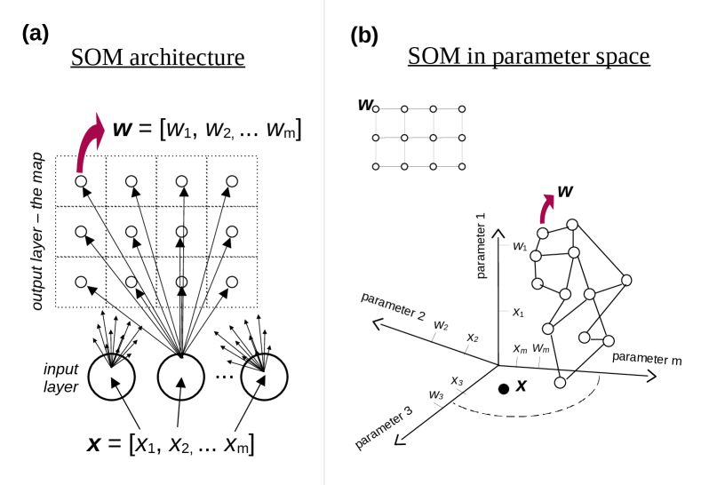
اللوحة a. بنية SOM. تمثل الدوائر السفلية عصبونات الإدخال، بينما تمثل الدوائر الأصغر العلوية عصبونات الإخراج التي تبني الخريطة المستوية 2D. تتلقى عصبونات الإدخال قيم معاملات الجرم وتتصل بجميع عصبونات الإخراج كما تبين الأسهم. أما المربعات المتقطعة المتمركزة حول عصبونات الإخراج فهي البكسلات المستخدمة لتصور الخريطة. وتوخياً للوضوح، لا يُظهر إلا عصبون إدخال واحد أسهماً تمتد إلى كل عصبون إخراج. كما تُعرض صراحة أوزان لعصبون إخراج واحد فقط.
اللوحة b. SOM في فضاء معاملات ذي
 بعداً. يُمثَّل موضع عصبونات الإخراج على شبكة الخريطة المستوية 2D بخطوط تصل بينها. وتُعرض الخريطة نفسها أدناه، مغمورة في فضاء معاملات الإدخال، حيث يمثل كل محور معاملاً واحداً. وتظهر على المحاور صراحة إحداثيات عصبون واحد وجرم واحد .
بعداً. يُمثَّل موضع عصبونات الإخراج على شبكة الخريطة المستوية 2D بخطوط تصل بينها. وتُعرض الخريطة نفسها أدناه، مغمورة في فضاء معاملات الإدخال، حيث يمثل كل محور معاملاً واحداً. وتظهر على المحاور صراحة إحداثيات عصبون واحد وجرم واحد .
يمتلك كل عصبون في طبقة الإخراج (الخريطة المستوية 2D) مجموعة فريدة من  أوزان مرتبطة به: (الشكل 1؛ اللوحة a). وعدد الأوزان
أوزان مرتبطة به: (الشكل 1؛ اللوحة a). وعدد الأوزان  يساوي عدد معاملات الإدخال التي تصف كل جرم . وعندما يعرض جرم معين ذو معاملات على طبقة الإدخال، يوضع ذلك الجرم على العصبون الذي تكون أوزانه الأكثر شبهاً بمعاملات الإدخال . والمقياس الأكثر استعمالاً لهذا الغرض هو المسافة الإقليدية:
يساوي عدد معاملات الإدخال التي تصف كل جرم . وعندما يعرض جرم معين ذو معاملات على طبقة الإدخال، يوضع ذلك الجرم على العصبون الذي تكون أوزانه الأكثر شبهاً بمعاملات الإدخال . والمقياس الأكثر استعمالاً لهذا الغرض هو المسافة الإقليدية:
| (1) |
يوضع الجرم على العصبون ذي أصغر . ويشار إلى هذا العصبون عادة باسم «أفضل وحدة مطابقة» (BMU). وعندما تعرض جميع الأجرام  في العينة على SOM، تتوزع على الخريطة تبعاً لأوزان كل عصبون.
في العينة على SOM، تتوزع على الخريطة تبعاً لأوزان كل عصبون.
وثمة طريقة أخرى للتفكير في إسناد الأجرام إلى العصبونات، وهي تخيل فضاء معاملات إقليدي ذي  بعداً (الشكل 1؛ اللوحة b). فتكون معاملات الأجرام إحداثيات في هذا الفضاء، وتشغل جميع الأجرام هذا الفضاء. أما إحداثيات عصبونات الخريطة في هذا الفضاء فهي أوزانها . ويمكن النظر إلى شبكة الخريطة، أي مواضع العصبونات المتجاورة وغيرها على الخريطة المستوية 2D، بوصفها الخطوط التي تصل بينها. وتمثل هذه الخريطة سطحاً منحنياً متقطعاً 2D مضمناً في فضاء معاملات ذي
بعداً (الشكل 1؛ اللوحة b). فتكون معاملات الأجرام إحداثيات في هذا الفضاء، وتشغل جميع الأجرام هذا الفضاء. أما إحداثيات عصبونات الخريطة في هذا الفضاء فهي أوزانها . ويمكن النظر إلى شبكة الخريطة، أي مواضع العصبونات المتجاورة وغيرها على الخريطة المستوية 2D، بوصفها الخطوط التي تصل بينها. وتمثل هذه الخريطة سطحاً منحنياً متقطعاً 2D مضمناً في فضاء معاملات ذي  بعداً. ويسند كل جرم إلى أقرب عصبون إليه وفق مقياس المسافة الإقليدية
بعداً. ويسند كل جرم إلى أقرب عصبون إليه وفق مقياس المسافة الإقليدية  .
.
يمثل إسناد الأجرام إلى عصبونات الخريطة خفضاً للأبعاد. فكل جرم ترتبط به  معاملات لا يمتلك على الخريطة 2D إلا معاملين منفصلين، هما إحداثيا شبكة الخريطة لوحدة BMU الخاصة به.
معاملات لا يمتلك على الخريطة 2D إلا معاملين منفصلين، هما إحداثيا شبكة الخريطة لوحدة BMU الخاصة به.
صُممت SOMs لاكتشاف الأنماط والتجمعات وما شابهها بين الأجرام استناداً إلى معاملاتها، وللحفاظ على طوبولوجيا توزعها ذي  بعداً عند وضعها على الخريطة. فالأجرام المتشابهة (القريبة في فضاء المعاملات) ينبغي أن تكون قريبة بعضها من بعض على الخريطة. وإذا وجدت مجموعات مميزة من الأجرام، فينبغي أن تظهر على الخريطة في صورة مجموعات 2D. وإذا كانت أوزان الخريطة عشوائية، فإن الأجرام ستتوزع عشوائياً على الخريطة؛ ولذلك يجب تدريب الخريطة، أي تعديل أوزانها وفق معاملات الأجرام. وبهذا المعنى تشبه خوارزمية SOM خوارزميات ANN الأخرى التي تحتاج أيضاً إلى تدريب. غير أن الأجرام المستخدمة في تدريب SOM غير موسومة. ولا يلزم بالضرورة تقسيمها إلى عينات تدريب واختبار (وتحقق)، ولا توجد دالة خسارة أو كلفة يجب تصغيرها حتى تتقارب إلى حد أدنى كلي. ويمكن تعريف دالة كلفة معينة لـ SOM ومراقبة تناقصها مع تقدم التدريب، لكن تصغير تلك الدالة ليس أساس خوارزمية التدريب.
بعداً عند وضعها على الخريطة. فالأجرام المتشابهة (القريبة في فضاء المعاملات) ينبغي أن تكون قريبة بعضها من بعض على الخريطة. وإذا وجدت مجموعات مميزة من الأجرام، فينبغي أن تظهر على الخريطة في صورة مجموعات 2D. وإذا كانت أوزان الخريطة عشوائية، فإن الأجرام ستتوزع عشوائياً على الخريطة؛ ولذلك يجب تدريب الخريطة، أي تعديل أوزانها وفق معاملات الأجرام. وبهذا المعنى تشبه خوارزمية SOM خوارزميات ANN الأخرى التي تحتاج أيضاً إلى تدريب. غير أن الأجرام المستخدمة في تدريب SOM غير موسومة. ولا يلزم بالضرورة تقسيمها إلى عينات تدريب واختبار (وتحقق)، ولا توجد دالة خسارة أو كلفة يجب تصغيرها حتى تتقارب إلى حد أدنى كلي. ويمكن تعريف دالة كلفة معينة لـ SOM ومراقبة تناقصها مع تقدم التدريب، لكن تصغير تلك الدالة ليس أساس خوارزمية التدريب.
تعمل خوارزمية SOM بإدخال الأجرام، وتحديد BMU لكل جرم، ثم تعديل أوزان BMU لتطابق قيم معاملات الجرم على نحو أوثق، ثم فعل الشيء نفسه لأوزان العصبونات المحيطة بدرجة أصغر كلما ابتعدت على شبكة الخريطة المستوية 2D. وهذا الجزء الأخير أساسي لخاصية التنظيم الذاتي في الخريطة، إذ يتيح وضع الأجرام المتشابهة على بكسلات متجاورة في الخريطة المدربة. كما يعني أن المواضع النسبية للعصبونات على شبكة الخريطة المستوية 2D مهمة عند تدريب الخريطة. وثمة عامل مهم آخر هو أن مقدار تعديل الوزن ونصف القطر حول BMU يتناقصان مع كل تكرار (أي مع عرض جرم أو أجرام على الخوارزمية). ويسمح ذلك للخريطة بأن تستقر في موضعها النهائي بعد عدد كاف من التكرارات. وأخيراً، يعتمد تعديل الوزن خطياً على الفرق بين الأوزان وقيم معاملات الجرم المقابلة، مما يضمن أن يكون تحديث الأوزان نحو قيم المعاملات أكبر عندما يكون الفرق بينهما أكبر. ويوصف اعتماد تعديلات الأوزان على المسافة (على الخريطة المستوية 2D) عن BMU، وهي  ، بواسطة «دالة جوار» هي . وعادة ما تكون
، بواسطة «دالة جوار» هي . وعادة ما تكون  دالة غاوسية متناظرة 2D متمركزة عند BMU:
دالة غاوسية متناظرة 2D متمركزة عند BMU:
| (2) |
يتحكم العامل  في عرض (الانحراف المعياري) دالة الجوار
في عرض (الانحراف المعياري) دالة الجوار  ، وهو يتناقص مع كل تكرار ، عادة على نحو أسي.
وتكون صيغة تحديث وزن العصبون الواقع على مسافة
، وهو يتناقص مع كل تكرار ، عادة على نحو أسي.
وتكون صيغة تحديث وزن العصبون الواقع على مسافة  من BMU، بصيغة متجهية، كما يأتي:
من BMU، بصيغة متجهية، كما يأتي:
| (3) |
في كل تكرار يكون الجرم مختلفاً66
6
لذلك فإن المسافة من BMU على الخريطة المستوية 2D، أي ، تعتمد أيضاً بصورة غير مباشرة على التكرار  لأن جرماً جديداً يقابل غالباً BMU مختلفة.
إلى أن تمرر جميع الأجرام
لأن جرماً جديداً يقابل غالباً BMU مختلفة.
إلى أن تمرر جميع الأجرام  من العينة. وبذلك يكتمل عهد تدريب واحد. ويكون العدد الكلي للتكرارات عندئذ ، حيث إن هو عدد العهود. ويختار الحد
من العينة. وبذلك يكتمل عهد تدريب واحد. ويكون العدد الكلي للتكرارات عندئذ ، حيث إن هو عدد العهود. ويختار الحد  (i) بحيث يبدأ عند من قيمة عظمى معينة، وينخفض إلى قيمة دنيا معينة عند
(i) بحيث يبدأ عند من قيمة عظمى معينة، وينخفض إلى قيمة دنيا معينة عند  تكون عادة أصغر كثيراً من قيمة البداية. أما الحد
تكون عادة أصغر كثيراً من قيمة البداية. أما الحد  (i) فيبدأ عادة بقيمة قريبة من حجم الخريطة عند ، ثم يتناقص حتى لا يشمل إلا عصبوناً واحداً، هو BMU، عند .
(i) فيبدأ عادة بقيمة قريبة من حجم الخريطة عند ، ثم يتناقص حتى لا يشمل إلا عصبوناً واحداً، هو BMU، عند .
يمكن استخلاص بعض الاستنتاجات من الخوارزمية السابقة، التي يشار إليها باسم «الخوارزمية الآنية». كما ذكرنا، لا تكون الأجرام موسومة، ولا تقوم هذه الخوارزمية على تصغير دالة كلفة. فعدد التكرارات محدد مسبقاً ولا يعتمد على تقارب دالة الكلفة إلى حد أدنى. وتضمن طريقة تعريف و تقارب الخريطة. غير أن من المهم أن يكون عدد العهود كبيراً بما يكفي كي تتقارب الخريطة بسلاسة إلى حالتها المثلى. حتى إذا بدأنا من قيم الأوزان الابتدائية نفسها، فستختلف الخريطة النهائية إذا تغير ترتيب عرض الأجرام في العينة. وينبغي في هذه الحالة أن تظل الخريطة النهائية مظهرة المجموعات والأنماط نفسها، لكنها ستقع في مواضع مختلفة على الخريطة. لا يمكن تنفيذ كل تكرار إلا بعد اكتمال التكرار السابق. ولذلك تكون الخوارزمية حلقة كبيرة واحدة، ولا يمكن موازاة العملية، فتظل بطيئة نسبياً.
توجد أيضاً صيغة مشابهة من الخوارزمية، تسمى «خوارزمية الدفعات»، تعالج جميع الأجرام في العينة في الوقت نفسه لكل عهد. والصيغة التي تنظم تحديث الأوزان هي:
| (4) |
في هذه الحالة يمثل كل تكرار  عهداً واحداً، أي إن العدد الكلي للتكرارات هو عدد العهود . ويجرى الجمع على جميع الأجرام
عهداً واحداً، أي إن العدد الكلي للتكرارات هو عدد العهود . ويجرى الجمع على جميع الأجرام  في العينة. ولا يتغير العامل
في العينة. ولا يتغير العامل  إلا بين العهود، ولا يوجد حد
إلا بين العهود، ولا يوجد حد  كما في الخوارزمية الآنية. وداخل الجمع يعتمد الحد على الجرم وعلى BMU الخاص به.
كما في الخوارزمية الآنية. وداخل الجمع يعتمد الحد على الجرم وعلى BMU الخاص به.
ومرة أخرى يمكن استخلاص بعض الاستنتاجات.
وكما في الخوارزمية الآنية، لا توجد أجرام موسومة ولا تصغير لدالة كلفة؛ إذ تتقارب الخريطة إلى موضعها النهائي ذاتياً، ولا تحتاج إلا إلى عهود كافية للتقارب إلى حالة مثلى.
إذا كانت قيم الأوزان الابتدائية متماثلة، فستكون الخريطة النهائية متماثلة بغض النظر عن ترتيب الأجرام في الجمع.
يمكن موازاة جزء الجمع، ولا تبقى حلقة تسلسلية إلا عبر العهود. وهذا قد يجعل خوارزمية الدفعات أسرع ويوفر الوقت، وهو فرق قد يكون مهماً إذا احتوت العينة على عدد كبير من الأجرام  .
.
يمكن جعل المعادلة (4) أوجز خوارزمياً بتجميع الأجرام التي تمتلك BMU نفسها، ثم الجمع على كل بكسل:
| (5) |
هنا يكون عدد البكسلات، و عدد الأجرام التي تكون BMU الخاصة بها هي البكسل . ويبقى الحد نفسه لجميع الأجرام ذات BMU نفسها. أما الحد فهو متجه متوسط لجميع الأجرام ذات BMU نفسها. وهذا يمكن أن يسرع الخوارزمية أكثر.
2.2 الخوارزمية
استخدمنا في هذا العمل SOMPY77
7
https://github.com/sevamoo/SOMPY (Moosavi et al., 2014) لتنفيذ SOM. وهو مكتوب بلغة Python88
8
https://www.python.org، ويستخدم تدريب الدفعات (المعادلتان 4 و5)، وهو سريع نسبياً. وفي ما يلي خصائص الخوارزمية وخياراتها، مع الإعدادات المختارة لهذه الورقة.
تستخدم الخوارزمية خريطة مستوية مستطيلة 2D ذات بكسلات مربعة أو سداسية؛ وقد اخترنا البكسلات المربعة للبساطة.
ثبتنا عدد بكسلات الإخراج عند القيمة الافتراضية (حيث إن  هو عدد الأجرام). وهذه قاعدة تقريبية شائعة لحجم الخريطة.
ضُبطت نسب الخريطة على القيمة الافتراضية، المستمدة من الطول النسبي لأكبر متجهي PCA99
9
تحليل المكونات الرئيسية. في مجموعة البيانات، وهي قاعدة تقريبية شائعة أخرى للخريطة.
يمكن أن تكون دالة الجوار
هو عدد الأجرام). وهذه قاعدة تقريبية شائعة لحجم الخريطة.
ضُبطت نسب الخريطة على القيمة الافتراضية، المستمدة من الطول النسبي لأكبر متجهي PCA99
9
تحليل المكونات الرئيسية. في مجموعة البيانات، وهي قاعدة تقريبية شائعة أخرى للخريطة.
يمكن أن تكون دالة الجوار  غاوسية (المعادلة 2) أو «فقاعية»1010
10
دالة شعاعية 2D ذات قيمة ثابتة تهبط إلى الصفر عند نصف قطر معين.. وقد اختيرت الدالة الغاوسية لأنها تستخدم عادة دالة جوار. وتقسم الخوارزمية التدريب إلى جزأين: «تقريبي» و«دقيق»، لكل منهما عدد تكراراته. ويرتبط ذلك بقيمة العرض المتوسط
غاوسية (المعادلة 2) أو «فقاعية»1010
10
دالة شعاعية 2D ذات قيمة ثابتة تهبط إلى الصفر عند نصف قطر معين.. وقد اختيرت الدالة الغاوسية لأنها تستخدم عادة دالة جوار. وتقسم الخوارزمية التدريب إلى جزأين: «تقريبي» و«دقيق»، لكل منهما عدد تكراراته. ويرتبط ذلك بقيمة العرض المتوسط  (المعادلة 2). ففي التدريب التقريبي يبدأ من قيمة أصغر إلى حد ما من طول الخريطة وينتهي عند قيمة أصغر بعدة مرات. وفي التدريب الدقيق يبدأ من القيمة السابقة وينتهي عند قيمة قريبة من ، وهي المسافة بين BMU والبكسلات المجاورة لها1111
11
أعلى وأسفل ويسار ويمين، لا الاتجاهات القطرية الأربعة.. وفي الحالتين يتناقص
(المعادلة 2). ففي التدريب التقريبي يبدأ من قيمة أصغر إلى حد ما من طول الخريطة وينتهي عند قيمة أصغر بعدة مرات. وفي التدريب الدقيق يبدأ من القيمة السابقة وينتهي عند قيمة قريبة من ، وهي المسافة بين BMU والبكسلات المجاورة لها1111
11
أعلى وأسفل ويسار ويمين، لا الاتجاهات القطرية الأربعة.. وفي الحالتين يتناقص  خطياً مع كل تكرار دفعي
خطياً مع كل تكرار دفعي  . وبتقسيم مرحلة التدريب إلى جزأين بقيم ابتدائية ونهائية معطاة لـ ، تقرّب الخوارزمية اضمحلالاً أسياً.
يمكن أن تكون تهيئة الأوزان عشوائية أو معرفة بواسطة PCA. وفي الحالة الثانية تهيأ الأوزان بحيث تشكل الخريطة شبكة على مستوى تحدده أكبر مكونين من PCA في فضاء المعاملات، وتكون متمركزة حول البيانات. وقد اختيرت هذه الطريقة لأنها تمنح الخريطة موضع بداية جيداً حتى إذا لم تكن البيانات ثنائية الأبعاد وخطية في جوهرها.
توجد خيارات متعددة لتطبيع البيانات، لكننا استخدمنا تطبيعاً مخصصاً يشرح في القسم التالي.
اختير عدد عهود التدريب لكل من التدريب التقريبي والدقيق بحيث لا تتغير الخريطة النهائية تغيراً ملحوظاً، وبحيث لا يتغير متوسط «خطأ التكميم» بأكثر من 1 في المائة عند مضاعفة عدد العهود. وخطأ التكميم هو الفرق بين قيم معاملات الجرم وأوزان BMU الخاصة به، ويعرف بأنه
. وبتقسيم مرحلة التدريب إلى جزأين بقيم ابتدائية ونهائية معطاة لـ ، تقرّب الخوارزمية اضمحلالاً أسياً.
يمكن أن تكون تهيئة الأوزان عشوائية أو معرفة بواسطة PCA. وفي الحالة الثانية تهيأ الأوزان بحيث تشكل الخريطة شبكة على مستوى تحدده أكبر مكونين من PCA في فضاء المعاملات، وتكون متمركزة حول البيانات. وقد اختيرت هذه الطريقة لأنها تمنح الخريطة موضع بداية جيداً حتى إذا لم تكن البيانات ثنائية الأبعاد وخطية في جوهرها.
توجد خيارات متعددة لتطبيع البيانات، لكننا استخدمنا تطبيعاً مخصصاً يشرح في القسم التالي.
اختير عدد عهود التدريب لكل من التدريب التقريبي والدقيق بحيث لا تتغير الخريطة النهائية تغيراً ملحوظاً، وبحيث لا يتغير متوسط «خطأ التكميم» بأكثر من 1 في المائة عند مضاعفة عدد العهود. وخطأ التكميم هو الفرق بين قيم معاملات الجرم وأوزان BMU الخاصة به، ويعرف بأنه  (المعادلة 1). أما متوسط خطأ التكميم فهو متوسط على جميع الأجرام
(المعادلة 1). أما متوسط خطأ التكميم فهو متوسط على جميع الأجرام  .
.
3 اختيار البيانات
من بين النتائج العديدة التي أتاحها تعاون EXTraS1212 12 http://www.extras-fp7.eu/index.php/archive، استكشفنا الفهرس الذي يقدم تحليل التغيرية اللادورية قصيرة الأمد. فلكل عملية كشف تُستخرج عدة منحنيات ضوء قصيرة الأمد (ضمن المدى الزمني لفترة مدارية واحدة، أي نحو 160 ks) وتحسب معاملات إحصائية، حيث تُعرَّف عملية الكشف بأنها رصد مصدر فريد ضمن فترة رصد فريدة لـ XMM-Newton1313 13 الفترة التي يقضيها التلسكوب موجهاً نحو اتجاه واحد. بكاميرا فريدة1414 14 توجد ثلاث كاميرات في المجموع: pn وMOS1 وMOS2. وضمن زمن تعريض فريد خلال فترة الرصد1515 15 يمكن أن توجد أزمنة تعريض متعددة لكاميرا واحدة خلال فترة رصد واحدة لـ XMM-Newton.. وتوجد أربعة أنماط لتقسيم منحنيات الضوء إلى صناديق، وستة نماذج زمنية ملائمة لمنحنيات الضوء، وأربعة نطاقات طاقة. وقد أدت كل هذه التوافيق، مع معاملات أخرى مستخرجة من منحنيات الضوء، إلى عدة مئات من المعاملات لكل عملية كشف.
يضم فهرس التغيرية قصيرة الأمد في EXTraS 872 075 عملية كشف، تصف كل منها 754 معاملاً1616 16 انظر صفحات المساعدة في أرشيف EXTraS للتغيرية قصيرة الأمد للاطلاع على القائمة الكاملة للمعاملات ووصفها.. واختيرت المعاملات بحيث تكون مشتقة من منحنيات ضوء ذات مجموعة واحدة من تعريفات الصناديق الزمنية، وأن تحتوي على معلومات التغيرية فقط لا المعلومات الطيفية، وأن لا تضم قيماً «معدومة» كثيرة. واستبعدنا معدل العد، أو أي بديل له، ومعاملات أخرى1717 17 معلومات متعلقة بالتعريف، ومدة الرصد، والأخطاء، ومعلومات آلية وإحصائية زائدة، وما إلى ذلك..
انطلاقاً من جميع المعاملات 754، خفضت معايير الاختيار عددها على النحو الآتي.
قبلنا فقط المعاملات المشتقة من منحنيات ضوء ذات صناديق زمنية منتظمة مقدارها 500 s (فانخفض العدد إلى 147 معاملاً).
اخترنا منحنيات ضوء تغطي نطاق الطاقة الكامل، لا أياً من النطاقات الفرعية الثلاثة (فانخفض العدد إلى 84 معاملاً).
استُبعدت جميع المعاملات المتعلقة بنماذج «الاضمحلال الأسي» و«التوهج» و«الاحتجاب» لأنها تحتوي على قيم معدومة كثيرة (فانخفض العدد إلى 53 معاملاً). واستُبعد معامل «التباين الزائد النسبي» وخطؤه للسبب نفسه (فانخفض العدد إلى 51 معاملاً).
استبعد معامل «متوسط معدل العد» وبدائله1818
18
وسيط معدل العد والمعاملات الأولى في نماذج «الثابت» و«الخطي» و«التربيعي». (نزولا إلى 47).
وأخيراً، فإن استبعاد معاملات أخرى مرتبطة بالتعريف وما شابه يترك  معاملاً.
يعرض الاختيار النهائي لهذه المعاملات ووصفها في الجدول 1 (الملحق A).
معاملاً.
يعرض الاختيار النهائي لهذه المعاملات ووصفها في الجدول 1 (الملحق A).
رُشحت عمليات الكشف 872 075 في الفهرس عبر الرايات وفحوص الجودة، مع اشتراط وجود 20 صناديق زمنية على الأقل، ومعدل عد غير سالب، وقيم غير معدومة لجميع المعاملات 31. وبالجمع بين هذه القيود كلها، تبقى لدينا  عملية كشف.
عملية كشف.
النوع الفيزيائي الفلكي مجهول لعدد كبير من مصادر XMM-Newton. تقابل عمليات الكشف لدينا نحو مصدر فريد، يقع منها قرابة في مستوى المجرة ( ضمن ). وبما أن معظم النجوم تقع في مستوى المجرة بينما تقع AGNs فوقه، فإن ذلك يعطي فكرة تقريبية عن تركيب مصادرنا. وللحصول على وصف كمي أكثر، وجد تصنيف حديث لمصادر XMM-Newton باستخدام طريقة خاضعة للإشراف (Tranin et al., 2021) أن نحو من المصادر هي AGNs، وأن نجوم، وأن بضع نسب مئوية منها ثنائيات أشعة سينية ومتغيرات كارثية. وينبغي أن تكون هذه النسب مشابهة في مصادرنا.
إن تطبيع المعاملات وارتباطها المتبادل مسألة غير بديهية، وتشرح بالتفصيل في الملحق A. ومع مجموعة بيانات تضم  عملية كشف (عينات)، وباعتماد خيارات التهيئة المبينة في القسم 2.2، تكون إعدادات خوارزمية SOM في هذه الحالة كما يأتي: حجم خريطة
عملية كشف (عينات)، وباعتماد خيارات التهيئة المبينة في القسم 2.2، تكون إعدادات خوارزمية SOM في هذه الحالة كما يأتي: حجم خريطة  ؛ و80 عهد تدريب لكل من التدريب التقريبي والضبط الدقيق؛ و
؛ و80 عهد تدريب لكل من التدريب التقريبي والضبط الدقيق؛ و (المعادلة 2) يتناقص خطياً من 6 إلى 1.5 أثناء التدريب التقريبي، ومن 1.5 إلى 1 أثناء التدريب الدقيق. ومع التنفيذ الدفعي للخوارزمية، لم يستغرق الأمر سوى نحو 5-10 دقائق لتدريب الخوارزمية على
(المعادلة 2) يتناقص خطياً من 6 إلى 1.5 أثناء التدريب التقريبي، ومن 1.5 إلى 1 أثناء التدريب الدقيق. ومع التنفيذ الدفعي للخوارزمية، لم يستغرق الأمر سوى نحو 5-10 دقائق لتدريب الخوارزمية على  عملية كشف (عينات) ذات
عملية كشف (عينات) ذات  معاملات (سمات) عبر 160 عهداً (تكراراً) على CPU عادية (CPU واحدة بتردد 2.6-3.5 GHz مع أربع نوى).
معاملات (سمات) عبر 160 عهداً (تكراراً) على CPU عادية (CPU واحدة بتردد 2.6-3.5 GHz مع أربع نوى).
4 النتائج
4.1 تطبيق SOM على بيانات EXTraS
كما فُسر بالتفصيل في القسم. 2، تنفذ SOM خفضا للأبعاد بدءا من n أجرام موصوفة بـ m معاملات، مما ينتج خريطة 2D (خريطة BMU) مأهولة بـ n أجرام. وفي الوقت نفسه تنفذ التجميع، بحيث تنتهي الأجرام المتشابهة قريبة بعضها من بعض على خريطة BMU مشكلة مجموعة.
كما ورد في القسم 3، طبقنا SOM على  عملية كشف لـ XMM-Newton موصوفة بـ
عملية كشف لـ XMM-Newton موصوفة بـ  معامل تغيرية. وتعرض خريطة BMU الناتجة في الشكل 2. وقد أضيف ترقيم البكسلات بدءاً من الزاوية اليسرى السفلى للاسترشاد.
مركز الخريطة متجانس في معظمه، في حين أن الجزء السفلي الأيسر، ذو الشكل المثلث، شديد التجزؤ ويبدو أنه يشكل جزءاً منفصلاً. ويشير ذلك إلى أن معظم عمليات الكشف في مركز الخريطة العريض تشكل مجموعة واحدة في فضاء المعاملات المطبع ذي
معامل تغيرية. وتعرض خريطة BMU الناتجة في الشكل 2. وقد أضيف ترقيم البكسلات بدءاً من الزاوية اليسرى السفلى للاسترشاد.
مركز الخريطة متجانس في معظمه، في حين أن الجزء السفلي الأيسر، ذو الشكل المثلث، شديد التجزؤ ويبدو أنه يشكل جزءاً منفصلاً. ويشير ذلك إلى أن معظم عمليات الكشف في مركز الخريطة العريض تشكل مجموعة واحدة في فضاء المعاملات المطبع ذي  بعداً. أما الجزء السفلي الأيسر من الخريطة فيوحي بأن عمليات الكشف الموضوعة هناك تشكل مجموعات صغيرة كثيرة.
بعداً. أما الجزء السفلي الأيسر من الخريطة فيوحي بأن عمليات الكشف الموضوعة هناك تشكل مجموعات صغيرة كثيرة.
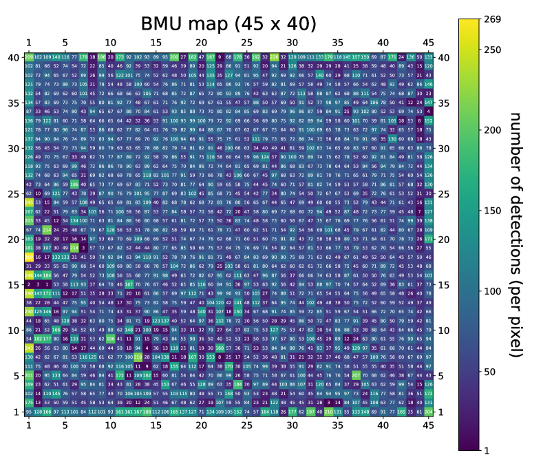
 . يقيس شريط الألوان عدد عمليات الكشف الموضوعة على كل بكسل. وتُعرض هذه القيمة أيضاً رقماً فوق كل بكسل. تبدأ إحداثيات البكسلات داخل الشبكة من الزاوية اليسرى السفلى، وتظهر على جميع جوانب الخريطة.
. يقيس شريط الألوان عدد عمليات الكشف الموضوعة على كل بكسل. وتُعرض هذه القيمة أيضاً رقماً فوق كل بكسل. تبدأ إحداثيات البكسلات داخل الشبكة من الزاوية اليسرى السفلى، وتظهر على جميع جوانب الخريطة.
يعرض الشكل 3 مخطط U-matrix، الذي يتيح لنا تحديد بنية التجمع في بياناتنا بعرض مسافة كل عصبون عن أقرب أربعة جيران له في فضاء المعاملات المطبع. وبذلك يمكن تمثيل مجموعات العصبونات المتشابهة (المتقاربة) التي تمثل نقاطاً في فضاء معاملاتنا المطبع، ذي البعد  ، على هيئة مناطق من عصبونات متجاورة في المستوى. وتظهر هذه مناطق زرقاء داكنة متصلة في الشكل 3. أما الألوان الأفتح، من الأزرق السماوي إلى الأحمر، فتقابل مناطق أقل كثافة تفصل المجموعات (مثل المجموعات في المثلث السفلي الأيسر، حيث يظهر فصلها على هيئة خطوط في خريطة U-matrix) أو تقع عند الحواف (مثل المجموعات الواقعة على حافتي خريطة U-matrix العليا واليمنى). وتمثل الحالة الثانية مجموعات من القيم الشاذة، أي نقاطاً تختلف، لسبب ما، عن الجرم النموذجي في مجموعة بياناتنا. ومن الواضح أن الأجرام المختلفة منهجياً قد تمثل مصادر ذات أهمية فيزيائية فلكية تستحق دراسة إضافية.
، على هيئة مناطق من عصبونات متجاورة في المستوى. وتظهر هذه مناطق زرقاء داكنة متصلة في الشكل 3. أما الألوان الأفتح، من الأزرق السماوي إلى الأحمر، فتقابل مناطق أقل كثافة تفصل المجموعات (مثل المجموعات في المثلث السفلي الأيسر، حيث يظهر فصلها على هيئة خطوط في خريطة U-matrix) أو تقع عند الحواف (مثل المجموعات الواقعة على حافتي خريطة U-matrix العليا واليمنى). وتمثل الحالة الثانية مجموعات من القيم الشاذة، أي نقاطاً تختلف، لسبب ما، عن الجرم النموذجي في مجموعة بياناتنا. ومن الواضح أن الأجرام المختلفة منهجياً قد تمثل مصادر ذات أهمية فيزيائية فلكية تستحق دراسة إضافية.
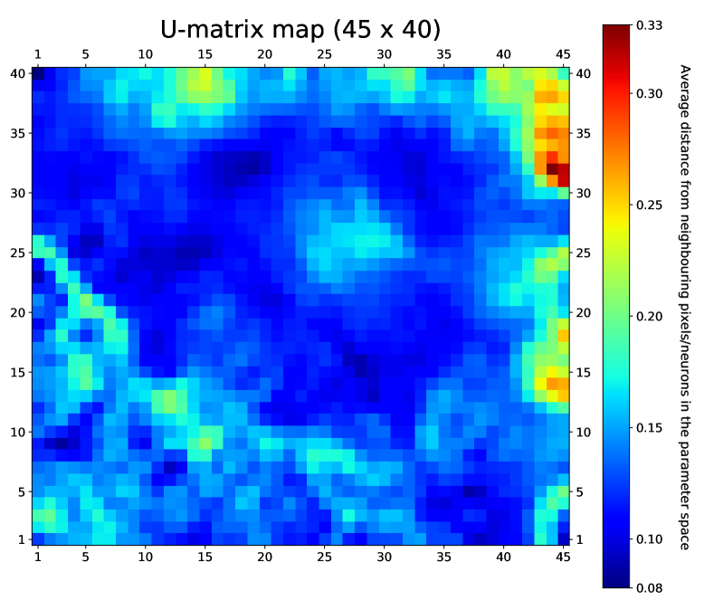
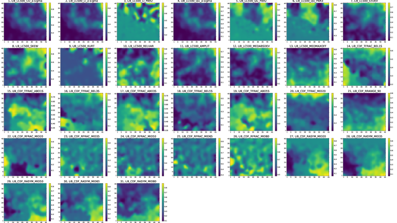
يكشف الشكل 4 كيف تسقط المعاملات  على هذا المستوى. ومن الناحية التقنية، فإن ما يعرض هو أوزان عصبونات SOM فوق شبكة من 1800 () عصبوناً. وعلى الرغم من وجود عصبوناً في المجموع، ولكل منها 31 وزناً لكل معامل (تقابل الإحداثيات
على هذا المستوى. ومن الناحية التقنية، فإن ما يعرض هو أوزان عصبونات SOM فوق شبكة من 1800 () عصبوناً. وعلى الرغم من وجود عصبوناً في المجموع، ولكل منها 31 وزناً لكل معامل (تقابل الإحداثيات  الملائمة في فضاء المعاملات)، يبين الشكل 4 أنه يمكن تصورها بسهولة على هيئة خريطة لكل معامل، أي لكل إحداثي في فضاء المعاملات.
الملائمة في فضاء المعاملات)، يبين الشكل 4 أنه يمكن تصورها بسهولة على هيئة خريطة لكل معامل، أي لكل إحداثي في فضاء المعاملات.
يمكن مقارنة هذه الخرائط بصرياً بالشكل 3 لكشف الخصائص المرتبطة بكل مجموعة فرعية من البيانات؛ فعلى سبيل المثال، يمكن التحقق بسهولة من أن الزاوية العلوية اليمنى من الخريطة (التي تقابل في معظمها قيماً شاذة وفق الشكل 3) تمتلك خواص تغيرية مميزة. ومن ثم يعمل الجمع بين الشكل 3 والشكل 4 كجدول إرشادي يوجه الفحص البصري المباشر للمصادر.
4.2 تحليل المصادر المتغيرة
لفحص عمليات الكشف التي قد تكون مهمة عن قرب، ركزنا على المصادر المتغيرة. وعُرفت التغيرية بحيث تكون ملاءمة منحنى الضوء ذي الصناديق الزمنية 500 s بنموذج ثابت غير مقبولة (). كما أخذنا في الحسبان منحنيات الضوء من كاميرا pn الأكثر حساسية فقط، لضمان عينة تضم جميع عمليات الكشف الفريدة (مصدر فريد ضمن إطار زمني فريد). ويبلغ عدد عمليات الكشف التي تحقق هذه الشروط  . ويعرض موضعها على خريطة BMU الرئيسية (المدربة على جميع عمليات الكشف
. ويعرض موضعها على خريطة BMU الرئيسية (المدربة على جميع عمليات الكشف  ) في الشكل 5.
) في الشكل 5.
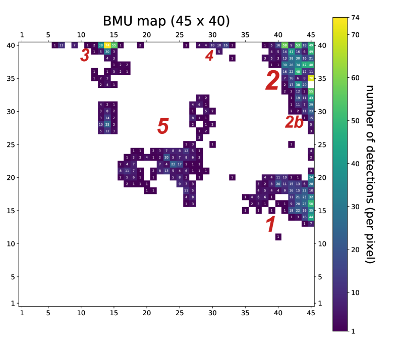
 . تقابل البكسلات البيضاء صفراً من عمليات الكشف. وتمثل الأرقام الحمراء ترقيم «التكتلات» (المزيد في النص)، ويبين حجمها على نحو توضيحي عدد عمليات الكشف في كل منها.
. تقابل البكسلات البيضاء صفراً من عمليات الكشف. وتمثل الأرقام الحمراء ترقيم «التكتلات» (المزيد في النص)، ويبين حجمها على نحو توضيحي عدد عمليات الكشف في كل منها.
يتضح أن المصادر المتغيرة تشكل مجموعات مميزة، أو «تكتلات»، منفصلة بعضها عن بعض. وتأخذ معظم المجموعات الشكل نفسه للنواة حيث توجد غالبية عمليات الكشف، مع تناقص عدد عمليات الكشف إلى الصفر بازدياد المسافة عن النواة. كما تظهر بعض المجموعات بنى فرعية. وفي الشكل 3، تقابل البكسلات ذات القيمة الأعلى غالباً بكسلات تحتوي مجموعات من عمليات الكشف المتغيرة. وتعني القيمة العالية في خريطة U-matrix أن هذه العصبونات بعيدة عن العصبونات المجاورة في فضاء المعاملات.
يبين الشكل 6 أن عصبونات SOM 1800 تتبع توزيع جميع عمليات الكشف  اتباعاً جيداً إلى حد ما1919
19
المحور y بمقياس لوغاريتمي. لكل من المعاملات
اتباعاً جيداً إلى حد ما1919
19
المحور y بمقياس لوغاريتمي. لكل من المعاملات  . أما توزيع عمليات الكشف المتغيرة
. أما توزيع عمليات الكشف المتغيرة  فهو أكثر «امتداداً» نحو الحواف من توزيع جميع عمليات الكشف2020
20
وقد يكون هذا متوقعاً حدسياً لأشد عمليات الكشف تغيراً.. وفي معظم المعاملات عند الحواف القصوى (قرب الصفر والواحد)، يتداخل التوزيعان عملياً. وهذا يعني أن عمليات الكشف المتغيرة تميل إلى الوقوع قرب حواف فضاء المعاملات. ويمكن تفسير ذلك بأن عمليات الكشف المتغيرة تنتمي إلى عدة مجموعات شبه شاذة؛ ويؤكد النظر إلى خريطة U-matrix هذا التفسير (الشكل 3).
فهو أكثر «امتداداً» نحو الحواف من توزيع جميع عمليات الكشف2020
20
وقد يكون هذا متوقعاً حدسياً لأشد عمليات الكشف تغيراً.. وفي معظم المعاملات عند الحواف القصوى (قرب الصفر والواحد)، يتداخل التوزيعان عملياً. وهذا يعني أن عمليات الكشف المتغيرة تميل إلى الوقوع قرب حواف فضاء المعاملات. ويمكن تفسير ذلك بأن عمليات الكشف المتغيرة تنتمي إلى عدة مجموعات شبه شاذة؛ ويؤكد النظر إلى خريطة U-matrix هذا التفسير (الشكل 3).
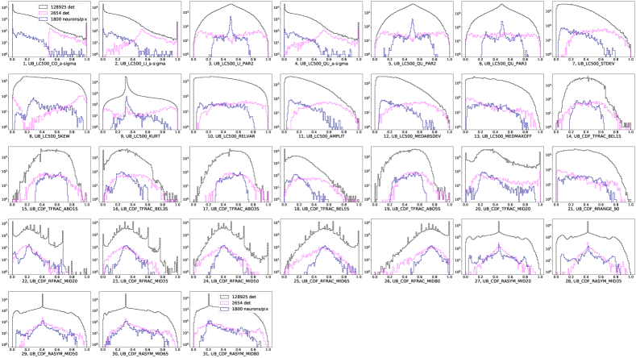
 . تعرض مقارنة بين توزيع مجموعة البيانات كاملة (بالأسود) وتوزيع عصبونات SOM (بالأزرق). ونمثل أيضاً توزيع المصادر المتغيرة (بالوردي). يتبع ترقيم المعاملات الجدول 1.
. تعرض مقارنة بين توزيع مجموعة البيانات كاملة (بالأسود) وتوزيع عصبونات SOM (بالأزرق). ونمثل أيضاً توزيع المصادر المتغيرة (بالوردي). يتبع ترقيم المعاملات الجدول 1.
استناداً إلى فحص بصري لخريطة BMU للمصادر المتغيرة (الشكل 5)، يمكن تعريف بعض التكتلات الواضحة كما يأتي: التكتل 1 يقع في الزاوية اليمنى السفلى عند الإحداثيات و و. ويبلغ عدد عمليات الكشف في هذه المجموعة نحو . التكتل 2 يقع في الزاوية اليمنى العليا عند الإحداثيين و. ويبلغ عدد عمليات الكشف في هذه المجموعة نحو . وتظهر هذه المجموعة بنية فرعية في جزئها السفلي (التكتل 2b)، مع فصل عند الإحداثيين و، وتحتوي نحو عملية كشف. التكتل 3 يقع في الزاوية اليسرى العليا عند الإحداثيات و و. ويبلغ عدد عمليات الكشف في هذه المجموعة نحو  . التكتل 4 يقع في الوسط العلوي عند الإحداثيات و و، والثاني أسفله عند و و و. ويحتوي هذا الأخير نحو عملية كشف. التكتل 5 يتكون من المجموعة المركزية عند و و و، ويحتوي نحو عملية كشف.
. التكتل 4 يقع في الوسط العلوي عند الإحداثيات و و، والثاني أسفله عند و و و. ويحتوي هذا الأخير نحو عملية كشف. التكتل 5 يتكون من المجموعة المركزية عند و و و، ويحتوي نحو عملية كشف.
تمتلك عمليات الكشف  ، في المتوسط، نسبة إشارة إلى ضجيج (S/N) أعلى بمرتبة مقدار2121
21
تعرف بأنها المعامل PN_8_DET_ML (الاحتمال الأعظمي) في فهرس 3XMM-DR4. من عمليات الكشف
، في المتوسط، نسبة إشارة إلى ضجيج (S/N) أعلى بمرتبة مقدار2121
21
تعرف بأنها المعامل PN_8_DET_ML (الاحتمال الأعظمي) في فهرس 3XMM-DR4. من عمليات الكشف  . وقد يكون ذلك متوقعاً. فعمليات الكشف الخافتة جداً لا تتجاوز عتبة تعريف التغيرية حتى لو كانت متغيرة في جوهرها.
. وقد يكون ذلك متوقعاً. فعمليات الكشف الخافتة جداً لا تتجاوز عتبة تعريف التغيرية حتى لو كانت متغيرة في جوهرها.
ينتج تدريب SOM على عمليات الكشف  فقط خريطة منتظمة من دون تكتلات منفصلة بوضوح. ويمكن تفسير ذلك بأن إحدى نتائج SOM هي إيجاد عمليات الكشف المهمة وتجميعها، وأن هذه العمليات تمتلك غالباً S/N عالية كي يكون تمييز سماتها المهمة ممكناً. ولكي تتمكن SOM أو أي خوارزمية تعلم آلي أخرى من «رؤية» سمات جوهرية في المصادر الخافتة (حتى لو لم يستطع فلكي، مثلاً، بكل الأدوات الإحصائية «العادية» القيام بذلك)، ينبغي إدخال الآثار الآلية والخلفية في الخوارزمية. وهذا التحليل خارج نطاق هذه الورقة.
فقط خريطة منتظمة من دون تكتلات منفصلة بوضوح. ويمكن تفسير ذلك بأن إحدى نتائج SOM هي إيجاد عمليات الكشف المهمة وتجميعها، وأن هذه العمليات تمتلك غالباً S/N عالية كي يكون تمييز سماتها المهمة ممكناً. ولكي تتمكن SOM أو أي خوارزمية تعلم آلي أخرى من «رؤية» سمات جوهرية في المصادر الخافتة (حتى لو لم يستطع فلكي، مثلاً، بكل الأدوات الإحصائية «العادية» القيام بذلك)، ينبغي إدخال الآثار الآلية والخلفية في الخوارزمية. وهذا التحليل خارج نطاق هذه الورقة.
4.3 تصنيف المجموعات المختلفة
4.3.1 نظرة سريعة على جميع النقط
لفحص كل تكتل فحصاً تقريبياً، اخترنا عشوائياً ربع عمليات الكشف وعاينا منحنيات ضوئها بصرياً بحثاً عن أنماط مميزة. وقسمنا منحنيات الضوء إلى فئات بحسب شكلها الرئيسي: توهجات، ونتوءات، وتوهجات متعددة، ونتوءات متعددة، وانخفاضات-احتجابات، وخطية، وعشوائية.
نصنف أي زيادة شديدة في الفيض يتبعها خفوت إلى مستوى السكون على أنها توهجات ونتوءات، لكن التوهجات، تحديداً، تتبع نمطاً زمنياً ذا صعود سريع واضمحلال أسي (FRED)، بينما تمتلك النتوءات شكلاً أكثر تناظراً (وينطبق الأمر نفسه على التوهجات المتعددة والنتوءات المتعددة). وعلى الرغم من أن التوهجات والنتوءات قد تنشأ من آليات متشابهة (مثلاً، يبين Pye et al. (2015) أن التوهجات الإكليلية من النجوم قد تمتلك أزمنة صعود واضمحلال متقاربة في نسبة كبيرة من الحالات)، فقد قررنا إبقاء هاتين الفئتين الظاهريتين من منحنيات الضوء منفصلتين. وتجمع الانخفاضات والاحتجابات في فئة واحدة تضم أي منحنى يحوي انخفاضاً مفاجئاً ومهماً واحداً أو أكثر في الفيض يتبعه تعاف إلى المستوى الأعلى؛ أما الحالات القليلة من الانخفاضات والاحتجابات الظاهرية المغطاة جزئياً بالرصد فقد عولجت حالة بحالة. وتشمل الفئة العشوائية منحنيات الضوء التي لا تظهر نمطاً مميزاً من التغيرية. بنينا خريطة تعرض الفئة الأكثر عدداً في كل بكسل (الشكل 7).
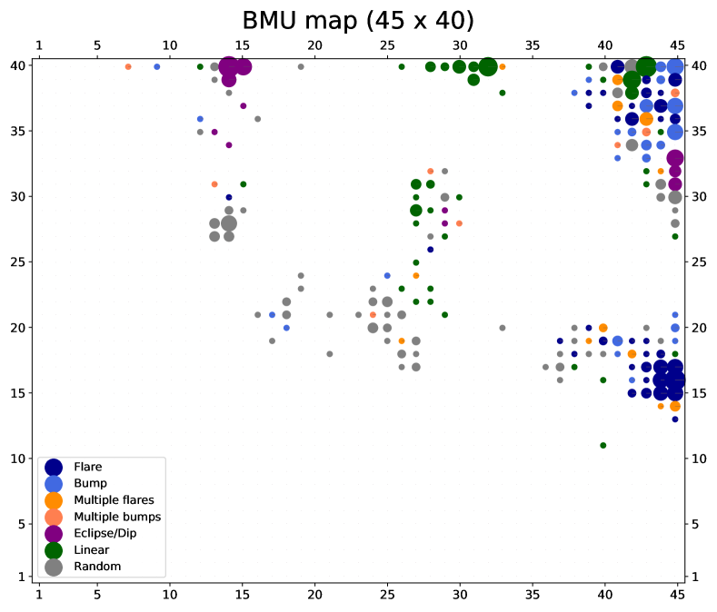
 ، وتعرض الفئات على هيئة أقراص ملونة لكل بكسل. وتعرض الفئة الأكثر عدداً عند كل بكسل. التوهجات باللون الأزرق الداكن، والنتوءات بالأزرق الفاتح، والتوهجات المتعددة بالبرتقالي الداكن، والنتوءات المتعددة بالبرتقالي الفاتح، والاحتجابات والانخفاضات بالأرجواني، والخطية بالأخضر، والعشوائية بالرمادي. ويقابل حجم القرص (مساحته) عدد عمليات الكشف المنتمية إلى أكثر الفئات عدداً في بكسل BMU معين.
، وتعرض الفئات على هيئة أقراص ملونة لكل بكسل. وتعرض الفئة الأكثر عدداً عند كل بكسل. التوهجات باللون الأزرق الداكن، والنتوءات بالأزرق الفاتح، والتوهجات المتعددة بالبرتقالي الداكن، والنتوءات المتعددة بالبرتقالي الفاتح، والاحتجابات والانخفاضات بالأرجواني، والخطية بالأخضر، والعشوائية بالرمادي. ويقابل حجم القرص (مساحته) عدد عمليات الكشف المنتمية إلى أكثر الفئات عدداً في بكسل BMU معين.
يتضح أن فئات معينة من منحنيات الضوء تتركز غالباً في مناطق معينة. فعلى سبيل المثال، تتركز التوهجات المفردة بقوة في نواة التكتل 1 (أسفل اليمين). أما التكتل 2 (أعلى اليمين)، وهو أكبر مجموعة، فيتألف من فئات متنوعة لكن تهيمن عليه السمات المتعددة؛ في حين يهيمن على بنيته الفرعية (الجزء السفلي) الانخفاضات والاحتجابات. ويتكون التكتل 3 (أعلى اليسار) أساساً من انخفاضات واحتجابات. أما التكتل 4 (الوسط العلوي) فيتكون أساساً من منحنيات خطية. وتتركز المنحنيات العشوائية في التكتل 5 (المركزي).
نجحت خوارزمية SOM في استخلاص المصادر المتغيرة وتجميعها وفق سلوك التغيرية نفسه. ومن بين التكتلات المختلفة، فإن الأكثر إثارة للاهتمام فيزيائياً فلكياً هي التي تهيمن عليها التوهجات والانخفاضات والاحتجابات. ولهذه المجموعات وسعنا تحليلنا البصري.
4.3.2 توهجات مفردة
من التحليل في القسم 4.3.1، نجد أن جميع التوهجات تقريباً موزعة بين التكتل 1 والتكتل 2، مع وجود معظم التوهجات الشبيهة بـ FRED في الأول. وفي التكتل 1 تبدو التوهجات مركزة في النواة، في حين يكون توزيعها في التكتل 2 أكثر تعقيداً وتساهم أنواع كثيرة أخرى من المصادر في هذا التكتل.
وبسبب التركيز الكبير للتوهجات الشبيهة بـ FRED، فحصنا التكتل 1 بالتفصيل. ونظراً للعدد الكبير نسبياً من العناصر في التكتل 1، عاينا بصرياً نصف عمليات الكشف تقريباً، وعددها نحو فقط، مع التركيز على الظواهر التي يرجح أن تكون مرتبطة بتوهج فيزيائي فلكي.
حددنا ثلاث فئات رئيسية من منحنيات الضوء: (i) توهج مفرد – النسبة الأكبر هي توهجات «نموذجية» ذات نمط زمني FRED يقع كاملاً ضمن فترة الرصد. وبعضها يقع جزئياً فقط ضمن فترة رصد (مثل اضمحلال جزئي)، و/أو يمتلك نمطاً زمنياً مختلفاً (مثل «نتوءات» ذات زمن صعود واضمحلال متقاربين). (ii) غير مؤكد – تشمل جميع منحنيات الضوء التي تظهر سمة قد ترتبط بتوهج فيزيائي فلكي (مثل اضمحلال أسي، أو صعود سريع قرب نهاية الرصد، إلخ)، لكن لا يمكن استبعاد تفسير آخر. (iii) حالات غير توهجية – تشمل جميع منحنيات الضوء التي لا تحتوي أي سمة ملائمة تذكر بتوهج. تعرض أمثلة على التوهجات المفردة، والتوهجات غير المؤكدة، والحالات غير التوهجية في الشكل 8.
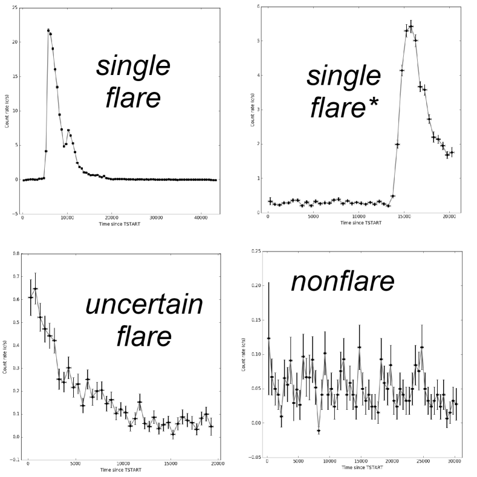
يبين الشكل 9 توزعات جميع الفئات. وتعرض التوهجات المفردة، والتوهجات غير المؤكدة، والحالات غير التوهجية في اللوحات اليمنى والوسطى واليسرى، على التوالي.
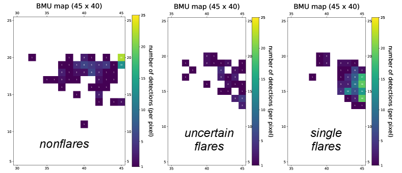
كما يتضح، يكون تركيز التوهجات الواضحة أعلى في نواة التكتل، ثم يخف باتجاه حوافه. ولتكميم هذه البنية على نحو تقريبي، قُسم التكتل إلى ثلاثة أجزاء: نواة، وهالة، وذيل.
يمكن وصف تركيز التوهجات المفردة وعمليات الكشف الأخرى كما يأتي: تُعرّف النواة بأنها البكسلات ذات الإحداثيات . وتحتوي النواة نحو عملية كشف، عوينت منها 100 بصرياً. ومن هذه، 85 توهجات مفردة، خمسة منها فقط نتوءات، و59 توهجات شبيهة بـ FRED، أما الباقي فتوهجات شبيهة بـ FRED لم تغطها الرصود كاملاً. وتوجد أيضاً 8 توهجات غير مؤكدة. وتُعرّف الهالة بأنها البكسلات ذات الإحداثيات مع استثناء بكسلات النواة. وتحتوي الهالة نحو عملية كشف، عوينت منها 150 بصرياً. ومن هذه، 59 (39%) توهجات مفردة، عشرة منها نتوءات، و23 توهجات شبيهة بـ FRED، والباقي توهجات شبيهة بـ FRED لم تُرصد كاملة. وتوجد أيضاً 27 (18%) توهجات غير مؤكدة. أما الذيل فيعرّف بأنه البكسلات ذات الإحداثيات . ويحتوي الذيل نحو عملية كشف، عوينت منها 65 بصرياً. ومن هذه، ست (9%) توهجات مفردة (نتوءان وأربعة شبيهة بـ FRED وخافتة)، وعشر (15%) توهجات غير مؤكدة.
من المفيد مقارنة نتائج SOM بنتائج إحصاءات التوفيق لنموذج التوهج2222
22
يُعرَّف نموذج التوهج في فهرس EXTraS بأنه ثابت مضاف إليه صعود سريع واضمحلال أسي (FRED). في EXTraS.
اخترنا 566 عملية كشف (من أصل ) ذات إحصاء توفيق جيد لنموذج التوهج2323
23
(a) الفرضية الصفرية لنموذج التوهج هي ، و(b) يؤكد اختبار f التحسن الإحصائي عند استخدام نموذج التوهج بدلاً من ثابت عند  .: عوينت هذه بصرياً وصُنفت إلى توهجات مفردة، وتوهجات غير مؤكدة، وحالات غير توهجية. وتشكل التوهجات المفردة 251 عملية كشف، والتوهجات غير المؤكدة 42، والحالات غير التوهجية 273؛ أي إن نحو نصف عمليات الكشف 566 المختارة اعتماداً على توفيق جيد لنموذج التوهج ليست في الواقع توهجات (كأن يمتلك منحنى الضوء نمطاً عشوائياً استطاع التحليل الآلي توفيقه بالنموذج). ومن ثم فإن النهج القائم على توفيق النماذج يجعل نصف التوهجات المختارة غير حقيقية؛ أما باستخدام SOM، فإن 93% من عناصر نواة التكتل 1 هي توهجات (أو توهجات غير مؤكدة).
.: عوينت هذه بصرياً وصُنفت إلى توهجات مفردة، وتوهجات غير مؤكدة، وحالات غير توهجية. وتشكل التوهجات المفردة 251 عملية كشف، والتوهجات غير المؤكدة 42، والحالات غير التوهجية 273؛ أي إن نحو نصف عمليات الكشف 566 المختارة اعتماداً على توفيق جيد لنموذج التوهج ليست في الواقع توهجات (كأن يمتلك منحنى الضوء نمطاً عشوائياً استطاع التحليل الآلي توفيقه بالنموذج). ومن ثم فإن النهج القائم على توفيق النماذج يجعل نصف التوهجات المختارة غير حقيقية؛ أما باستخدام SOM، فإن 93% من عناصر نواة التكتل 1 هي توهجات (أو توهجات غير مؤكدة).
نعرض في الشكل 10 الفئات الثلاث على خريطة BMU. يقع نحو 90% من التوهجات جيدة التوفيق والمعاينة بصرياً في التكتلين 1 و2 (بنسبة  2:1)، بما يتفق مع نتائج SOM (الشكلان 7 و 9). وبينما تتركز التوهجات في نواة التكتل 1، فإنها تشكل هالة حول النواة في التكتل 2.
2:1)، بما يتفق مع نتائج SOM (الشكلان 7 و 9). وبينما تتركز التوهجات في نواة التكتل 1، فإنها تشكل هالة حول النواة في التكتل 2.
ومن ناحية أخرى، لا يوفق نموذج التوهج في EXTraS جيداً إلا نحو من التوهجات المفردة الحقيقية في مجمل الفحص البصري، إما لأن التوهج الحقيقي لا يطابق FRED مثالياً، أو لأن التوهج متراكب مع تغيرات طفيفة أخرى، أو لأن التوفيق يفشل.
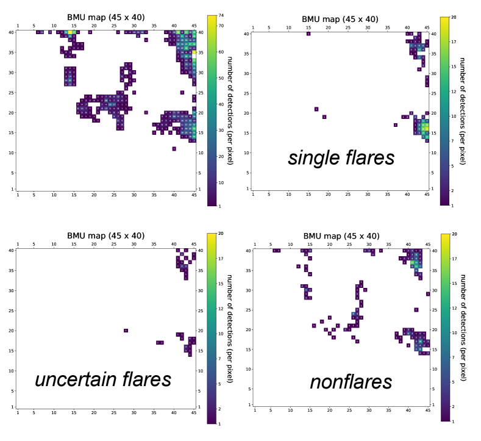
 ، والتوهجات المفردة (251 عملية كشف)، والتوهجات غير المؤكدة (42)، والحالات غير التوهجية (273).
، والتوهجات المفردة (251 عملية كشف)، والتوهجات غير المؤكدة (42)، والحالات غير التوهجية (273).
نستنتج أن SOM استطاعت استخلاص 97% من منحنيات الضوء ذات توهج مفرد «حقيقي» وتجميعها في مجموعتين مختلفتين (التكتل 1 والتكتل 2 بنسبة  2:1). وداخل التكتل 1 تشكل التوهجات ما يصل إلى 93% من النواة وما يصل إلى 57% من الهالة؛ أما داخل التكتل 2 فتتركز التوهجات في الهالة. وللمقارنة، نستطيع عبر تحليل تقليدي لتوفيق النماذج استخلاص 60% من التوهجات المفردة الحقيقية، ولا يحتوي إلا 52% من منحنيات الضوء جيدة التوفيق على توهج مفرد حقيقي.
2:1). وداخل التكتل 1 تشكل التوهجات ما يصل إلى 93% من النواة وما يصل إلى 57% من الهالة؛ أما داخل التكتل 2 فتتركز التوهجات في الهالة. وللمقارنة، نستطيع عبر تحليل تقليدي لتوفيق النماذج استخلاص 60% من التوهجات المفردة الحقيقية، ولا يحتوي إلا 52% من منحنيات الضوء جيدة التوفيق على توهج مفرد حقيقي.
يرجح أن معظم التوهجات المعاينة بصرياً صادرة عن نجوم نشطة إكليلياً؛ ويؤكد ذلك إما اقتران مصادر التوهج بنجوم في قاعدة بيانات Simbad، أو يوحي به الطيف اللين لمصادر الأشعة السينية ومصادفتها الموضعية لأجرام بصرية/تحت حمراء قريبة مفهرسة. ويمكن أيضاً العثور في العينة على ظواهر غريبة غير نجمية الأصل؛ فعلى سبيل المثال، في نواة التكتل 1 نجد الحالة المحيرة XMMU J134736.6+173403. يرتبط هذا المصدر بـ AGN منخفض الكتلة، ويظهر انخفاضاً مفاجئاً في الفيض بعامل 6.5 يحدث خلال نحو 1 ساعة2424 24 يمكن النظر إلى الشكل العام لمنحنى الضوء، الذي يتضمن «حالة مرتفعة» تستمر نحو 5 h، وانخفاضاً مفاجئاً في الفيض، و«حالة منخفضة» تستمر أكثر من 10 h، بوصفه نتوءاً يبدأ قبل بداية الرصد.. وكما ناقش Carpano et al. (2008) وCarpano and Jin (2018)، فإن هذا الانخفاض غير المعتاد في الفيض يستعصي على أي تفسير بسيط.
4.3.3 الانخفاضات والاحتجابات
من فحص بصري سريع للتكتلات (القسم 4.3.1)، نجد بنيتين مميزتين في خريطة BMU تهيمن فيهما الانخفاضات والاحتجابات: التكتل 3 والتكتل 2b (الشكل 5). وتضمان، على التوالي، 38% و22% من الانخفاضات والاحتجابات التي وجدت عبر الفحص البصري السريع؛ أما معظم ما تبقى منها فيوجد في بقية التكتل 2 (23%). وتتكون نواة التكتل العلوي الأيسر من البكسلين (14,40) و(15,40)، وتحتوي 129 منحنى ضوء؛ وتحاط بهالة من 87 منحنى ضوء وذيل من 20 منحنى. وتتكون نواة التكتل 2b من البكسلات (45,31) و(45,32) و(45,33)، أسفل البنية الرئيسية للتكتل 2 مباشرة لكنها منفصلة عنها؛ وتحتوي 127 منحنى ضوء.
فحصنا هنا التكتل 3 والتكتل 2b بالتفصيل. وعاينا بصرياً جميع منحنيات الضوء في هذه المناطق بالتفصيل، مركزين على الظواهر التي يرجح ارتباطها بانخفاض أو احتجاب. وقسمنا المصادر إلى ثلاث فئات: عشوائي، وانخفاض، واحتجاب. ولا تظهر منحنيات الضوء العشوائية أي سلوك سقوط-صعود واضح (حتى إذا كان يمكنها إظهار أي سلوك آخر موصوف في القسم 4.3.1). وصنفنا بقية منحنيات الضوء إلى «انخفاض» أو «احتجاب» استناداً إلى الأدبيات الخاصة بالمصادر المقترنة. وإذا لم توجد صلة بمصدر ذي انخفاضات أو احتجابات، اعتمد التصنيف على شكل الهبوط والصعود: فالانخفاضات قصيرة (أقل من 5 صناديق) ولها انخفاض وارتفاع واضحان (غالباً على شكل «V»)، في حين تكون الاحتجابات أطول و/أو تتميز بمستوى فيض منخفض ثابت (غالباً على شكل «U»). ويعرض مثال على انخفاض واحتجاب في الشكل 11.
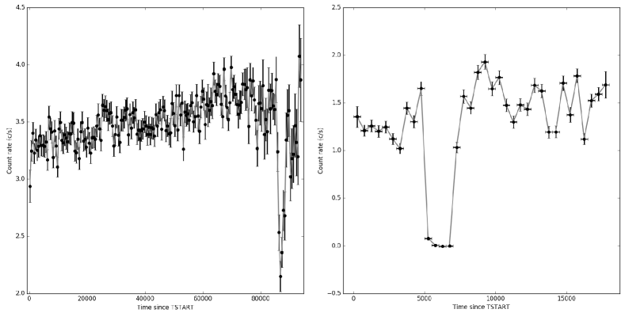
نجد أنه في نواة التكتل 3 تكون 90% من منحنيات الضوء انخفاضات أو احتجابات، في حين تبلغ هذه النسبة في الهالة 45%، وتمثل في الذيل 20%. ومعظمها (97% في النواة، و80% في الهالة، و83% في الذيل) انخفاضات. ومع أن بعض الانخفاضات أخطاء آلية تحدث في بداية الرصد أو نهايته، نجد مصادر كثيرة معروفة ذات انخفاضات، مثل: 2XMM J125048.6+410743 (Lin et al., 2013) و3XMM J004232.1+411314 (Marelli et al., 2017).
في نواة التكتل 2b، تكون 60% من منحنيات الضوء انخفاضات أو احتجابات، منها 60% احتجابات، وتكون الانخفاضات المتبقية عادة أطول من تلك في التكتل 3 و/أو أفقر إحصائياً. ونجد بينها مصادر احتجاب معروفة كثيرة، مثل: V* V1727 Cyg (Bozzo et al., 2007) وV* XY Ari (Norton and Mukai, 2007). وفحصنا وجود هالة في الجزء السفلي الأيسر من blob2، لكن 8 فقط من أصل 105 منحنى ضوء أظهرت احتجاباً أو انخفاضاً واضحاً.
استطاعت خوارزمية SOM، بناء على ذلك، استخلاص 83% من منحنيات الضوء التي تظهر انخفاضاً أو احتجاباً واحداً أو أكثر، وتجميعها في التكتل 3 والتكتل 2 (التحليل البصري السريع في القسم 4.3.1). ومن التحليل البصري التفصيلي نجد أنه داخل التكتل 3 تهيمن الانخفاضات بوضوح على الاحتجابات، وأن الانخفاضات والاحتجابات تشكل 90% من نواة التكتل و45% من هالته. ويسيطر على التكتل 2b انخفاضات واحتجابات، منها 60% احتجابات مفردة أو متعددة، في حين أن معظم الانخفاضات أعرض من تلك الموجودة في التكتل 3. وفي نواة هذا التكتل، تظهر 60% من منحنيات الضوء انخفاضاً أو احتجاباً واحداً أو أكثر.
لتأكيد النتائج المبنية على الفحص البصري ومقارنتها، لا يمكننا الاعتماد على نموذج الاحتجاب في EXTraS كما فعلنا مع التوهجات (القسم 4.3.2). فنموذج الاحتجاب بسيط جداً، إذ يمتلك شكل U مثالياً، ولذلك لا يستطيع وصف منحنيات ضوء أعقد (مثلاً ذات زمن صعود واضمحلال)، أو انخفاضات، أو سمات دورية؛ فضلاً عن أن نموذج الاحتجاب يلائم عادة معظم الزيادات أو الانخفاضات العشوائية في منحنى ضوء منخفض الإحصاء. وتأتي مقارنة تقريبية من العينة المستخدمة للتحليل البصري السريع في القسم 4.3.1: فعدد الاحتجابات جيدة التوفيق2525 25 نستخدم التعريف نفسه كما في القسم 4.3.2. يزيد على ضعف العدد المتوقع من الفحص البصري، في حين أن نصف الانخفاضات والاحتجابات فقط من الفحص البصري يوفقها نموذج الاحتجاب جيداً. وبدلاً من ذلك، اخترنا عشوائياً عدداً من المصادر الشبيهة باحتجابات الأشعة السينية المرصودة بـ XMM-Newton من الأدبيات. ويضم اختيارنا العشوائي أنواعاً مختلفة من الأجرام، ذات رصد واحد أو أكثر، وذات سمة واحدة أو أكثر في التعريض نفسه. اخترنا 12 مصدراً لما مجموعه 22 عملية كشف (انظر الجدول 2 في الملحق B). ومن عمليات الكشف 22، تقع 16(+1) في نواة (هالة) التكتل 2b. وتقع أربع عمليات كشف في الجزء المتبقي من التكتل 2، لكن دائماً عند X = 45. وتقع عملية كشف واحدة في التكتل 3. ومن اللافت أيضاً أن التعريضات المختلفة للمصدر نفسه تقع عادة في البكسل نفسه أو في بكسل مجاور.
4.4 مصادر مثيرة للاهتمام
الانخفاضات والاحتجابات نادرة نسبياً ومهمة فيزيائياً فلكياً لأنها تشير عادة إلى أنظمة ثنائية و/أو تلمح إلى وجود قرص تراكم أو كتل من الغبار. وفي هذه الحالة تكون SOM مفيدة بوجه خاص لاكتشاف أنظمة منفردة مثيرة للاهتمام. لذلك بحثنا في عينتنا عن سمات غير منشورة وحصلنا على ثمانية مصادر. وفي ما يلي نقدم وصفاً موجزاً لها، بما في ذلك أسماء XMM-Newton، وأرقام المصادر، والإحداثيات (وكلها مأخوذة من فهرس 3XMM-DR4).
3XMM J063736.4+053932 (obs.id. 0655560101, src. 1, BMU pixel 14,39) يقع عند RA(J2000) 06:37:36.48, Dec(J2000) +05:39:32.59. ويظهر منحنى الضوء EXTraS pn احتجاباً كلياً في آخر 2 ks (من تعريض قدره 26 ks) لا تغطيه كاميرات MOS. وتشير المصادفة الموضعية مع النجم ذي القدر V 8.5، HD 47179، إلى أن هذا المصدر نظام ثنائي نجمي.
3XMM J081928.9+704219 (obs.id. 0200470101, src. 1, BMU pixel 14,40) يقع عند RA(J2000) 08:19:29.00 Dec(J2000) +70:42:19.17. ويظهر منحنى الضوء EXTraS pn بوضوح انخفاضاً يخفض معدل العد في الأشعة السينية إلى النصف (5 ks ضمن تعريض 83 ks). ويقع ذلك خلال فترة خلفية عالية جداً، لكن شكل الانخفاض لا يبدو مرتبطاً بالخلفية. يرتبط هذا المصدر بمصدر الأشعة السينية فائق اللمعان المدروس جيداً Holmberg II X-1. وقد حلل Goad et al. (2006) عملية الكشف هذه، لكن زمن الانخفاض استُبعد بسبب الخلفية العالية. وعلى الرغم من أن أدوات EXTraS ملائمة جيداً للتعامل مع الخلفية العالية (De Luca et al., 2021)، فإن تأكيد هذه السمة يتطلب تحليلاً مخصصاً.
3XMM J133000.9+471343 (obs.id. 0303420201, src. 2, BMU pixel 14,40) يقع عند RA(J2000) 13:30:00.96 Dec(J2000) +47:13:43.65. ويظهر منحنى الضوء EXTraS pn نمطاً خافقاً غريباً، ربما شبه دوري، بمقياس زمني قدره  20 min. وتؤكد منحنيات الضوء من كاميرات MOS هذه التغيرية الغريبة. ومن اللافت أن المصدر هو M51 ULX-7، وهو مصدر أشعة سينية فائق اللمعان نابض (
20 min. وتؤكد منحنيات الضوء من كاميرات MOS هذه التغيرية الغريبة. ومن اللافت أن المصدر هو M51 ULX-7، وهو مصدر أشعة سينية فائق اللمعان نابض ( 2.8 s) له فترة مدارية قدرها
2.8 s) له فترة مدارية قدرها  2 يوم، وتضمين محتمل فوق مداري قدره
2 يوم، وتضمين محتمل فوق مداري قدره  38.9 يوم (Rodríguez Castillo et al., 2020; Vasilopoulos et al., 2021).
38.9 يوم (Rodríguez Castillo et al., 2020; Vasilopoulos et al., 2021).
3XMM J031822.1-663603 (obs.id. 0405090101, src. 2, BMU pixel 14,40) يقع عند RA(J2000) 03:18:22.17 Dec(J2000) -66:36:03.4. ويظهر منحنى الضوء EXTraS pn تغيرية عشوائية مع هبوط مفاجئ شبيه بالاحتجاب ( 40% من معدل العد المتوسط) خلال آخر 3 ks من الرصد. ويؤكد هذا الهبوط كلا كاشفي MOS. ويرتبط هذا المصدر بمصدر الأشعة السينية فائق اللمعان النابض (
40% من معدل العد المتوسط) خلال آخر 3 ks من الرصد. ويؤكد هذا الهبوط كلا كاشفي MOS. ويرتبط هذا المصدر بمصدر الأشعة السينية فائق اللمعان النابض ( 1.5 s) NGC1313 X-2 (Sathyaprakash et al., 2019; Robba et al., 2021).
1.5 s) NGC1313 X-2 (Sathyaprakash et al., 2019; Robba et al., 2021).
3XMM J080945.3-472110 (obs.id. 0112670501, src. 4, BMU pixel 45,32) يقع عند RA(J2000) 08:09:45.35 Dec(J2000) -47:21:10.16. يبدأ منحنى الضوء EXTraS pn في حالة ثابتة منخفضة تستمر 3ks (ضمن تعريض 28 ks)، ثم يرتفع فجأة بعامل  10 في معدل العد. ويمكن تفسيره إما احتجاباً أو توهج FRED ذا زمن اضمحلال مميز طويل جداً (
10 في معدل العد. ويمكن تفسيره إما احتجاباً أو توهج FRED ذا زمن اضمحلال مميز طويل جداً ( 30 ks). ولا تتوفر بيانات من كاميرات MOS. ونلاحظ أن رصد XMM-Newton الآخر الوحيد لهذا المصدر (تعريض 55 ks) يظهر معدل عد متوافقاً مع الحالة المنخفضة. ويتوافق هذا المصدر موضعياً مع المرشح لجرم نجمي فتي 2MASS J08094536-4721101.
30 ks). ولا تتوفر بيانات من كاميرات MOS. ونلاحظ أن رصد XMM-Newton الآخر الوحيد لهذا المصدر (تعريض 55 ks) يظهر معدل عد متوافقاً مع الحالة المنخفضة. ويتوافق هذا المصدر موضعياً مع المرشح لجرم نجمي فتي 2MASS J08094536-4721101.
3XMM J063045.4-603113 (obs.id. 0679381201, src. 1, BMU pixel 45,32) يقع عند RA(J2000) 06:30:45.42 Dec(J2000) -60:31:13.15. ويظهر منحنى الضوء EXTraS احتجاباً أو سلسلة انخفاضات في آخر 3ks من الرصد (ضمن تعريض 13ks)، مع هبوط قدره  75% من معدل العد. ويؤكد هذا السلوك كلا كاشفي MOS. ويرتبط المصدر بـ XMMSL1 J063045.9-603110، وهو مصدر عابر غريب (Read et al., 2011) اقترح أنه حدث تمزيق مدي (Mainetti et al., 2016)، لكنه صنف لاحقاً طيفياً على أنه مستعر (Oliveira et al., 2017).
75% من معدل العد. ويؤكد هذا السلوك كلا كاشفي MOS. ويرتبط المصدر بـ XMMSL1 J063045.9-603110، وهو مصدر عابر غريب (Read et al., 2011) اقترح أنه حدث تمزيق مدي (Mainetti et al., 2016)، لكنه صنف لاحقاً طيفياً على أنه مستعر (Oliveira et al., 2017).
3XMM J182422.8-301833 (obs.id. 0551340201, src. 52, BMU pixel 45,32) يقع عند RA(J2000) 18:24:22.82 Dec(J2000) -30:18:33.2. ويظهر منحنى الضوء EXTraS pn بوضوح نمطاً دورياً، ربما جيبياً (أو سلسلة من الانخفاضات). وبالفعل، يكشف البحث عن المصادر الدورية المنفذ ضمن EXTraS إشارة مترابطة مهمة عند 2919 s (سيعرض تحليل كامل في فهرس نابضات EXTraS؛ Israel وآخرون، قيد الإعداد). ولمصدر الأشعة السينية عدة نظراء بصرية محتملة، كما أنه متوافق موضعياً مع مصدر WISE. وقد يكون ثنائياً أشعته السينية منخفض الكتلة، لكن الأمر يحتاج إلى تحليل مخصص لتأكيد هذه الفرضية.
3XMM J053427.3-052420 (obs.id. 0403200101, src. 5, BMU pixel 45,33) يقع عند RA(J2000) 05:34:27.37 Dec(J2000) -05:24:20.92. يبدأ منحنى الضوء EXTraS pn في حالة ثابتة منخفضة تستمر 20 ks (ضمن تعريض 90 ks)، ثم يرتفع فجأة بعامل  2 في معدل العد. وينبغي تفسير ذلك على أنه احتجاب، إذ إن توهج FRED ستكون له مدة اضمحلال مميزة طويلة جداً (
2 في معدل العد. وينبغي تفسير ذلك على أنه احتجاب، إذ إن توهج FRED ستكون له مدة اضمحلال مميزة طويلة جداً ( 90 ks). وتؤكد بيانات كاميرات MOS نمط التغيرية. وترى أرصاد XMM-Newton الأخرى المصدر، وهو عادة متغير، في حالات مختلفة. ويتوافق هذا المصدر موضعياً مع النجم المتغير من نوع Orion ذي القدر V 12.4، V* V1961 Ori.
90 ks). وتؤكد بيانات كاميرات MOS نمط التغيرية. وترى أرصاد XMM-Newton الأخرى المصدر، وهو عادة متغير، في حالات مختلفة. ويتوافق هذا المصدر موضعياً مع النجم المتغير من نوع Orion ذي القدر V 12.4، V* V1961 Ori.
4.5 محاذير وفحوص المتانة
عموماً، لا تضمن SOM تمثيل كل البنية الملائمة في مجموعة البيانات تمثيلاً صحيحاً. ويكمن فحص بسيط لما إذا كانت عملية التدريب قد أدت إلى نتيجة مقبولة في النظر إلى توزيع كل متغير من الفضاء العالي الأبعاد الأصلي: هل هو نفسه على عصبونات SOM كما في البيانات الأصلية؟ وبما أن هدف تدريب SOM هو أن تتصرف العصبونات مثل نقاط بيانات تمثيلية أو نماذج أولية، فهذا بوضوح حد أدنى من المتطلبات. وإذا كان للعصبونات توزيع مختلف جداً عن البيانات الأصلية، فهذا يعني أن التدريب لم يعمل كما ينبغي، ربما بسبب قلة التكرارات. وفي الشكل 6 نعرض جميع المعاملات المطبعة 31، مميزين جميع عمليات الكشف ، وعمليات الكشف المتغيرة 2654، وعصبونات SOM 1800. ويتضح أن عصبونات SOM لدينا تتبع عموماً توزيع البيانات الأصلية في كل معامل.
اختبار آخر له هدف مشابه هو مقارنة نتائج SOM لدينا بنتائج طرائق أخرى أبسط لخفض الأبعاد. وأبسطها PCA، وهو إجراء خطي يبني مجموعة من التراكيب الخطية المتعامدة، المعظمة للتباين، للإحداثيات الأصلية (المعيارية). ويسمح الاحتفاظ بأول إحداثيين فقط من PCA، وهما اللذان يفسران أكبر قدر من التباين في مجموعة البيانات، بالتصور على مستوى. لكن الطبيعة الخطية لـ PCA تصعّب عليه تمثيل البنية غير الخطية تمثيلاً صحيحاً. وفي الشكل 12، تُسقط خريطة SOM لدينا من فضاء المعاملات الأصلي ذي 31 بعداً إلى مستوى يتكون من أول إحداثيين من PCA. ويمكن أن نرى بوضوح أن خريطتنا تغطي عموماً هذا المستوى PCA، وإن كانت ملتوية بطريقة غير بديهية. ويشير ذلك إلى أن المعاملات الأصلية مترابطة بطرائق غير خطية معقدة، مما يبرر الحاجة إلى SOM، أو إلى خفض أبعاد غير خطي عموماً، بدلاً من PCA. وقد يكون أحد أسباب القلق أن SOM قد تمتلك شكلاً معقداً (الشكل 12) لأنها تحاول التعويض عن الفرق بين البعد الجوهري لمجموعة البيانات والبعد الجوهري للخريطة . إن زيادة أبعاد SOM لدينا بترتيب عصبوناتها على شبكة في فضاء ثلاثي الأبعاد من شأنه معالجة هذه المسألة، لكنه يجعل التصور أشد تعقيداً. ولذلك اخترنا عدم بحث هذا الخيار في الورقة الحالية، وإن كان قد يستحق الاستقصاء في ورقة لاحقة.
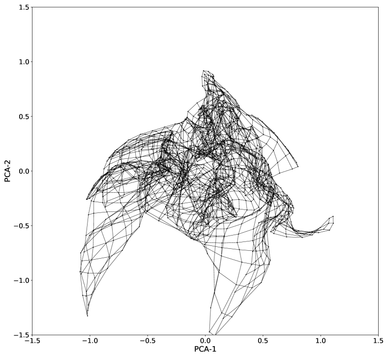
5 الاستنتاجات
طوّر تلسكوب XMM-Newton معرفتنا بسماء الأشعة السينية تطوراً كبيراً، إذ كشف مشروع EXTraS ووصّف التغيرية الزمنية لأكثر من 300 000 مصدر. وتطرح مجموعة البيانات الناتجة تحديات البيانات الضخمة النموذجية، وتقدم مثالاً واضحاً على انتقال علم فلك الأشعة السينية إلى هذا النطاق. وفي هذا السياق، لا تسمح لنا النهوج التقليدية (مثل الفحص البصري البشري) بالاستفادة الكاملة من الفرص التي تتيحها البيانات.
طبقنا في هذه الورقة نهجاً من التعلم الآلي بهدف تنظيم البيانات آلياً لزيادة فاعلية الفحص البشري المباشر. ولهذا الغرض اخترنا مجموعة فرعية من المعاملات، من العدد الكبير الأصلي الذي وفره EXTraS، تصف تغيرية كل مصدر، وطبقنا خفض الأبعاد على مجموعة البيانات الناتجة. وأنجز ذلك باستخدام خوارزمية SOM، التي تمثل البيانات على مستوى مع محاولة احترام طوبولوجيا الفضاء الأصلي العالي الأبعاد. وبحسب بنائها، تشيد SOM شبكة من نقاط تمثيلية تلخص البيانات الأصلية، وترتبها متجمعة وفق تشابه خصائصها. وهكذا تجمع البيانات مع خفض بعدها إلى مستوى لأغراض التصور. وهذا ما لا يحققه نهج خطي مثل PCA، الذي سيفوته معظم البنية غير الخطية الجوهرية في مجموعة بياناتنا التي تستطيع SOM التقاطها، كما هو مبين في الشكل 12.
على الرغم من أن SOM خوارزمية مجربة زمنياً واستُخدمت من قبل في علم الفلك، فهذه هي المرة الأولى2626 26 على حد علمنا. التي تطبق فيها في هذا السياق (مجموعة بيانات كبيرة للأشعة السينية). ونتيجة لذلك بسّطنا عملية تعرف المصادر، التي لولا ذلك لكانت مدفوعة بالاكتشاف العرضي، فوجدنا توهجات وانخفاضات واحتجابات وأنواع مصادر أخرى مرتبة كلها في كتل متجاورة على مستوى SOM. وعند استخدام SOM بهذه الطريقة، تتيح للفلكي التركيز على فحص مناطق من فضاء البيانات تبدو واعدة علمياً.
سلطنا الضوء على مشكلة توفيق النماذج الزمنية مباشرة بمنحنيات الضوء واستخدامه لتوصيفها، ولا سيما عندما تكون البيانات ضجيجية، وأظهرنا أن خوارزمية SOM تستطيع تجاوز هذه المشكلة إلى حد ما باستخدام معاملات مشتقة من منحنيات الضوء.
ومع إدخال هذه الأداة الجديدة، تمكنا من استكشاف مجموعة بيانات EXTraS، مركزين على المصادر المتغيرة، واختيار عدد من الأجرام ذات خصائص مثيرة للاهتمام تستحق متابعة البحث، بما في ذلك أنواع مختلفة من الأنظمة الثنائية (من النجوم الثنائية إلى ULXs) فضلاً عن مصادر أكثر غرابة. ومع أن بعض هذه الأجرام دُرس ووصف سابقاً في الأدبيات، مثل أشهر مصدر ذي انخفاضات وأكثرها لمعاناً 3XMM J004232.2+411314 (Marelli et al., 2017)، والمصدر العابر الغريب 3XMM J063045.4-603113 (Mainetti et al., 2016)، وAGN منخفض الكتلة سيئ الفهم XMMU J134736.6+173403 (Carpano et al., 2008)، فقد استخرجنا أيضاً بعض المصادر الجديدة المهمة (القسم 4.4). وينبغي التنبيه إلى أن مجموعة البيانات هذه، المبنية على أرصاد جمعت حتى 2012، كانت قد حُللت على نطاق واسع في المجتمع الفلكي لسنوات قبل هذا العمل.
يزداد تلخيص البيانات قيمة مع نمو مجموعات البيانات. ولذلك فإن نهجنا واعد، ولا سيما في ضوء بيانات EXTraS الجديدة المقبلة، فضلاً عن المهمات الفضائية المستقبلية التي قد تنتج بيانات أغنى وأكثر حساسية بكثير من XMM-Newton، مثل مرصد ESA ATHENA. علاوة على ذلك، تمهد نتائجنا الطريق لعمل مقبل يركز على التعلم الخاضع للإشراف، حيث يكون الهدف البحث عن أجرام محددة (مثل أحداث شبيهة بتوهجات FRED أو احتجابات) مسلحين بفهم جيد لفضاء المعاملات. وسيتيح لنا ذلك، مثلاً، تصور التصنيف المتوقع لمتعلم خاضع للإشراف على مستوى SOM، وهو أسلوب فعال لقابلية التفسير (انظر مثلاً، Molnar, 2019).
Acknowledgements.
تقر M. K. بالدعم المالي من وكالة الفضاء الإيطالية (ASI) بموجب اتفاقية ASI-INAF رقم 2017-14-H.0. تقر M. P. بالدعم المالي من برنامج الاتحاد الأوروبي Horizon 2020 للبحث والابتكار، بموجب اتفاقية منحة Marie Sklodowska-Curie رقم No. . يقر جميع المؤلفين بتعليقات المحكم واقتراحاته التي أدت إلى تحسين هذا العمل.References
- K2 variable catalogue - II. Machine learning classification of variable stars and eclipsing binaries in K2 fields 0-4. MNRAS 456 (2), pp. 2260–2272. External Links: Document, 1512.01246, ADS entry Cited by: §2.1.
- Data mining and machine learning in astronomy. International Journal of Modern Physics D 19 (07), pp. 1049–1106. Cited by: §1.
- The weirdest SDSS galaxies: results from an outlier detection algorithm. MNRAS 465 (4), pp. 4530–4555. External Links: Document, 1611.07526, ADS entry Cited by: §1.
- Machine Learning in Astronomy: a practical overview. arXiv e-prints, pp. arXiv:1904.07248. External Links: 1904.07248, ADS entry Cited by: §1.
- Prototype selection for interpretable classification. The Annals of Applied Statistics, pp. 2403–2424. Cited by: §1.
- A highly-ionized absorber in the X-ray binary 4U 1323-62: A new explanation for the dipping phenomenon. A&A 436 (1), pp. 195–208. External Links: Document, astro-ph/0410385, ADS entry Cited by: footnote 29.
- The eclipsing bursting X-ray binary EXO 0748-676 with EPIC on XMM-Newton. Mem. Soc. Astron. Italiana 75, pp. 484. External Links: ADS entry Cited by: footnote 29.
- X-ray eclipse time delays in ¡ASTROBJ¿4U 2129+47¡/ASTROBJ¿. A&A 476 (1), pp. 301–306. External Links: Document, 0709.4366, ADS entry Cited by: §4.3.3, footnote 29.
- The automated classification of astronomical light curves using Kohonen self-organizing maps. MNRAS 353 (2), pp. 369–376. External Links: Document, astro-ph/0408118, ADS entry Cited by: §2.1.
- XMMU J134736.6+173403: an eclipsing LMXB in quiescence or a peculiar AGN?. A&A 480 (3), pp. 807–810. External Links: Document, 0801.4246, ADS entry Cited by: §4.3.2, §5.
- Discovery of a 23.8 h QPO in the Swift light curve of XMMU J134736.6+173403. MNRAS 477 (3), pp. 3178–3184. External Links: Document, 1803.10976, ADS entry Cited by: §4.3.2.
- The EXTraS project: Exploring the X-ray transient and variable sky. A&A 650, pp. A167. External Links: Document, 2105.02895, ADS entry Cited by: §1, §4.4.
- EXTraS discovery of an X-ray superflare from an L dwarf. A&A 634, pp. L13. External Links: Document, 2002.08078, ADS entry Cited by: §1.
- How to Find Variable Active Galactic Nuclei with Machine Learning. ApJ 881 (1), pp. L9. External Links: Document, 1908.07542, ADS entry Cited by: §2.1.
- An approach to the analysis of SDSS spectroscopic outliers based on self-organizing maps. Designing the outlier analysis software package for the next Gaia survey. A&A 559, pp. A7. External Links: Document, ADS entry Cited by: §2.1.
- Unsupervised self-organized mapping: a versatile empirical tool for object selection, classification and redshift estimation in large surveys. MNRAS 419 (3), pp. 2633–2645. External Links: Document, 1110.0005, ADS entry Cited by: §2.1.
- Density-based outlier scoring on Kepler data. MNRAS 499 (1), pp. 524–542. External Links: Document, 2003.00109, ADS entry Cited by: §1.
- A deep XMM-Newton observation of the ultraluminous X-ray source Holmberg II X-1: the case against a 1000-Msolar black hole. MNRAS 365 (1), pp. 191–198. External Links: Document, astro-ph/0510185, ADS entry Cited by: §4.4.
- Discovery of a 0.42-s pulsar in the ultraluminous X-ray source NGC 7793 P13. MNRAS 466 (1), pp. L48–L52. External Links: Document, 1609.06538, ADS entry Cited by: §1.
- An accreting pulsar with extreme properties drives an ultraluminous x-ray source in NGC 5907. Science 355 (6327), pp. 817–819. External Links: Document, 1609.07375, ADS entry Cited by: §1.
- XMM-Newton observatory. I. The spacecraft and operations. A&A 365, pp. L1–L6. External Links: Document, ADS entry Cited by: §1.
- Effects of interstellar dust scattering on the X-ray eclipses of the LMXB AX J1745.6-2901 in the Galactic Centre. MNRAS 477 (3), pp. 3480–3506. External Links: Document, 1802.00637, ADS entry Cited by: footnote 29.
- Self-organized formation of topologically correct feature maps. Biological cybernetics 43 (1), pp. 59–69. Cited by: §1.
- Learning vector quantization. In Self-Organizing Maps, pp. 245–261. External Links: ISBN 978-3-642-56927-2, Document, Link Cited by: §1.
- Discovery of a Highly Variable Dipping Ultraluminous X-Ray Source in M94. ApJ 779 (2), pp. 149. External Links: Document, 1311.1198, ADS entry Cited by: §4.3.3, footnote 29.
- XMMSL1J063045.9-603110: a tidal disruption event fallen into the back burner. A&A 592, pp. A41. External Links: Document, 1605.06133, ADS entry Cited by: §4.4, §5.
- Discovery of Periodic Dips in the Brightest Hard X-Ray Source of M31 with EXTraS. ApJ 851 (2), pp. L27. External Links: Document, 1711.05540, ADS entry Cited by: §4.3.3, §5.
- Mapping the Galaxy Color-Redshift Relation: Optimal Photometric Redshift Calibration Strategies for Cosmology Surveys. ApJ 813 (1), pp. 53. External Links: Document, 1509.03318, ADS entry Cited by: §2.1.
- A large sample of Kohonen-selected SDSS quasars with weak emission lines: selection effects and statistical properties. A&A 568, pp. A114. External Links: Document, 1407.0193, ADS entry Cited by: §2.1.
- Interpretable machine learning. https://christophm.github.io/. Note: Cited by: §5.
- SOMPY: a python library for self organizing map (som). Note: GitHub.[Online]. Available: https://github. com/sevamoo/SOMPY Cited by: §2.2.
- Galaxy Morphology without Classification: Self-organizing Maps. ApJS 111 (2), pp. 357–367. External Links: Document, ADS entry Cited by: §2.1.
- A precessing accretion disc in the intermediate polar XY Arietis?. A&A 472 (1), pp. 225–232. External Links: Document, 0706.4388, ADS entry Cited by: §4.3.3.
- A Supernova Candidate at z = 0.092 in XMM-Newton Archival Data. ApJ 898 (1), pp. 37. External Links: Document, 2004.10665, ADS entry Cited by: §1.
- Exploratory Spectroscopy of Magnetic Cataclysmic Variables Candidates and Other Variable Objects. AJ 153 (4), pp. 144. External Links: Document, 1608.00650, ADS entry Cited by: §4.4.
- Different Fates of Young Star Clusters after Gas Expulsion. ApJ 900 (1), pp. L4. External Links: Document, 2008.02803, ADS entry Cited by: §2.1.
- Clustering clusters: unsupervised machine learning on globular cluster structural parameters. MNRAS 490 (3), pp. 3392–3403. External Links: Document, 1901.05354, ADS entry Cited by: §1.
- RX J004717.4-251811: The first eclipsing X-ray binary outside the Local Group. A&A 402, pp. 457–464. External Links: Document, astro-ph/0302546, ADS entry Cited by: footnote 29.
- Finding outlier light curves in catalogues of periodic variable stars. MNRAS 369 (2), pp. 677–696. External Links: Document, astro-ph/0505495, ADS entry Cited by: §1.
- A survey of stellar X-ray flares from the XMM-Newton serendipitous source catalogue: HIPPARCOS-Tycho cool stars. A&A 581, pp. A28. External Links: Document, 1506.05289, ADS entry Cited by: §4.3.1.
- CG X-1: An Eclipsing Wolf-Rayet ULX in the Circinus Galaxy. ApJ 877 (1), pp. 57. External Links: Document, 1904.01066, ADS entry Cited by: footnote 29.
- Classifying Gamma-Ray Bursts using Self-organizing Maps. ApJ 566 (1), pp. 202–209. External Links: Document, ADS entry Cited by: §2.1.
- XMM-Newton observations of the eclipsing polar EP Dra. MNRAS 354 (3), pp. 773–778. External Links: Document, astro-ph/0407523, ADS entry Cited by: footnote 29.
- XMM-Newton observations of the eclipsing polar V2301 Oph. MNRAS 379 (3), pp. 1209–1216. External Links: Document, 0705.2936, ADS entry Cited by: footnote 29.
- XMMSL1 J063045.9-603110 : A new bright soft X-ray transient from the XMM-Newton Slew Survey. The Astronomer’s Telegram 3811, pp. 1. External Links: ADS entry Cited by: §4.4.
- Effectively using unsupervised machine learning in next generation astronomical surveys. Astronomy and Computing 34, pp. 100437. External Links: Document, ADS entry Cited by: §1.
- Detecting outliers and learning complex structures with large spectroscopic surveys - a case study with APOGEE stars. MNRAS 476 (2), pp. 2117–2136. External Links: Document, 1711.00022, ADS entry Cited by: §1.
- The X-Ray Eclipse Geometry of the Super-soft X-Ray Source CAL 87. ApJ 792 (1), pp. 20. External Links: Document, 1408.3646, ADS entry Cited by: footnote 29.
- Broadband X-ray spectral variability of the pulsing ULX NGC 1313 X-2. A&A 652, pp. A118. External Links: Document, 2106.04501, ADS entry Cited by: §4.4.
- Discovery of a 2.8 s Pulsar in a 2 Day Orbit High-mass X-Ray Binary Powering the Ultraluminous X-Ray Source ULX-7 in M51. ApJ 895 (1), pp. 60. External Links: Document, 1906.04791, ADS entry Cited by: §4.4.
- The discovery of weak coherent pulsations in the ultraluminous X-ray source NGC 1313 X-2. MNRAS 488 (1), pp. L35–L40. External Links: Document, 1906.00640, ADS entry Cited by: §4.4.
- The European Photon Imaging Camera on XMM-Newton: The pn-CCD camera. A&A 365, pp. L18–L26. External Links: Document, ADS entry Cited by: §1.
- Probabilistic classification of X-ray sources applied to Swift-XRT and XMM-Newton catalogs. arXiv e-prints, pp. arXiv:2111.01489. External Links: 2111.01489, ADS entry Cited by: §3.
- The European Photon Imaging Camera on XMM-Newton: The MOS cameras. A&A 365, pp. L27–L35. External Links: Document, astro-ph/0011498, ADS entry Cited by: §1.
- M51 ULX-7: when strong beaming is not needed to explain super-Eddington luminosities. In American Astronomical Society Meeting Abstracts, American Astronomical Society Meeting Abstracts, Vol. 53, pp. 225.02. External Links: ADS entry Cited by: §4.4.
- The serendipituous discovery of a short-period eclipsing polar in 2XMMp. A&A 485 (3), pp. 787–795. External Links: Document, 0804.3946, ADS entry Cited by: footnote 29.
- An XMM-Newton view of the dipping low-mass X-ray binary XTE J1710-281. A&A 502 (3), pp. 905–912. External Links: Document, 0906.3954, ADS entry Cited by: footnote 29.
- StarGO: A New Method to Identify the Galactic Origins of Halo Stars. ApJ 863 (1), pp. 26. External Links: Document, 1806.06341, ADS entry Cited by: §2.1.
- Dynamical Relics of the Ancient Galactic Halo. ApJ 891 (1), pp. 39. External Links: Document, 1910.07538, ADS entry Cited by: §2.1.
Appendix A اختيار البيانات والتطبيع والارتباط
A.1 تطبيع البيانات
يعرض توزيع قيم كل واحد من المعاملات 31 التي اخترناها في الشكل 15. وتتوزع معظم المعاملات بأنوية ضيقة جداً متمركزة حول الصفر وذيول طويلة إما في الاتجاهين الموجب والسالب أو في الاتجاه الموجب فقط. وفي بعض المعاملات، مثل التفرطح والالتواء، يكون التوزيع غير متناظر بشدة. وفي هذه الحالات قُسمت المدرجات التكرارية على مقياس لوغاريتمي متماثل متمركز حول الصفر، مع مقياس خطي حول الصفر، للحصول على تصور أوضح لتوزيعها. وتمتد مجموعتا المعاملات CDF_TFRAC_* وCDF_RFRAC_* بين الصفر والواحد، ولا يمتلك توزيعهما نواة ضيقة كهذه مقارنة بالذيل. وقد رسمتا بصناديق زمنية خطية. ولجميع المعاملات العدد نفسه تماماً من القيم. وهذا ضروري لكي تعمل خوارزمية SOM، أي إن كل عملية كشف في فضاء المعاملات تمتلك جميع إحداثياتها 31 معرفة.
أعيد حساب قيم p الثلاث كلها (المدرجات 1 و2 و4 في الشكل 15) بدقة أعلى، وحولت إلى قيم سيغما أحادية الجانب بحيث تقابل السيغما الأعلى توفيقاً أسوأ للنموذج. وبهذه الطريقة تصبح السيغما بديلاً للتغيرية في مقابل النماذج الثلاثة. وسبب آخر لتحويل قيم p هو أن الغالبية العظمى منها تتركز قرب الصفر والواحد، ولا تكاد تميز على مقياس خطي؛ لكنها تقابل مستويات مختلفة جداً من جودة توفيق نماذجها. وحتى مع إعادة الحساب الأعلى دقة، سُقفت قيم كثيرة عند ، ولذلك تقع في الصندوق الأخير.
تظهر معاملات المجموعة CDF_RFRAC_* قمماً حادة فوق توزيع أملس. والسبب أنها تعرف بوصفها النسبة المئوية من الزمن الذي يقضيه المصدر في حالة معينة، وبما أن عدد الصناديق الزمنية محدود دائماً، فإن ذلك يقدم شكلاً من التقطيع.
تعتمد خوارزمية SOM عادة على المسافة الإقليدية في فضاء المعاملات لقياس عدم التشابه بين نقاط البيانات. ولتجنب إعطاء معاملات وزناً زائداً أو ناقصاً بسبب وحدات قياسها، ينبغي تطبيع قيمها على مقياس متقارب كي يكون لكل منها تأثير مشابه في توجيه تدريب SOM.
إن التطبيع البسيط إلى مجال ثابت بإعادة القياس الخطي له عيوب متعددة عند وجود ذيول طويلة و/أو قيم شاذة. فهذا يمنعنا، مثلاً، من إسناد حدّي كل متغير الأدنى والأعلى إلى [0, 1]، لأن معظم القيم ستتركز عندئذ قرب الصفر. وتمنعنا اعتبارات مشابهة من التطبيع بجعل الانحراف المعياري للعينة مساوياً للواحد.
نكمم أهمية نواة توزيع المعامل وذيله وقيمه الشاذة بأخذ نسبة الانحراف المعياري إلى الانحراف المطلق الوسيط،  (العمود الثالث في الجدول 1). والانحراف المطلق الوسيط متين تجاه الذيول الطويلة والقيم الشاذة، في حين أن الانحراف المعياري ليس كذلك؛ لذلك فإن القيم الكبيرة لـ تعني وجود ذيول طويلة و/أو قيم شاذة. ويمتلك نحو نصف المعاملات
(العمود الثالث في الجدول 1). والانحراف المطلق الوسيط متين تجاه الذيول الطويلة والقيم الشاذة، في حين أن الانحراف المعياري ليس كذلك؛ لذلك فإن القيم الكبيرة لـ تعني وجود ذيول طويلة و/أو قيم شاذة. ويمتلك نحو نصف المعاملات  ، مع كون الالتواء والتفرطح ذوي و. أما النصف الآخر فيمتلك
، مع كون الالتواء والتفرطح ذوي و. أما النصف الآخر فيمتلك  أو أو .
أو أو .
لحل هذه المسألة اعتمدنا على تحويل أسّي للمتغيرات المتأثرة. وعُرّف أس قانون القوة بأنه . والفكرة هي أن  يتناقص ببطء من 1 مع ازدياد
يتناقص ببطء من 1 مع ازدياد  ، وعندما فإن
، وعندما فإن  (كما عُيّن
(كما عُيّن  إلى 1 أيضاً عندما ). لذلك، لجميع المعاملات، (وموجب).
إلى 1 أيضاً عندما ). لذلك، لجميع المعاملات، (وموجب).
لكل مجموعة من قيم المعامل، حُولت المسافة بين قيمتين متتاليتين على النحو . ويؤدي ذلك إلى زيادة المسافة بين القيم المتقاربة جداً، وتقليل المسافة بين القيم المتباعدة جداً. كما يكون أثر زيادة المسافة أو إنقاصها أكبر (أي  أصغر) إذا امتلك المعامل
أصغر) إذا امتلك المعامل  أعلى. وبعبارة تقريبية، تمدد هذه العملية الأنوية وتضغط الذيول بشدة تعتمد على التوزيع الابتدائي. وتحافظ هذه العملية على ترتيب القيم. وأخيراً، أعيد قياس جميع المعاملات المحولة خطياً إلى المجال [0, 1].
أعلى. وبعبارة تقريبية، تمدد هذه العملية الأنوية وتضغط الذيول بشدة تعتمد على التوزيع الابتدائي. وتحافظ هذه العملية على ترتيب القيم. وأخيراً، أعيد قياس جميع المعاملات المحولة خطياً إلى المجال [0, 1].
يعرض الشكل 16 التوزيع المطبع لكل معامل. وتُقسم جميع المدرجات خطياً بين الصفر والواحد. وتملأ القيم المطبعة للمعاملات المجال نفسه [0, 1]، وتكون موزعة على نحو أكثر انتظاماً بكثير من القيم الأصلية مع الحفاظ على الشكل العام للتوزيع الأصلي. فالمعاملات ذات () تمتلك توزيعاً مطابقاً قبل التطبيع وبعده؛ والمعاملات ذات () تمتلك توزيعاً متشابهاً في الحالتين؛ أما توزيع المعاملات ذات () فهو الأكثر تأثراً بالتطبيع (بمعنى تمديد النواة وضغط الذيل). وتبقى القيم القصوى (أي القيم الشاذة المحتملة) عند حواف توزيعها، لكنها ليست بعيدة جداً عن غالبية القيم.
A.2 ارتباط البيانات
كما يتبين من المدرجات التكرارية (الشكلان 15 و 16)، يبدو أن عدة معاملات تشترك في توزيع مشابه. وكممنا ارتباطاتها الزوجية بحساب معامل ارتباط «Pearson r»، الذي يقيس الارتباط الخطي بين المعاملات.
تعرض مصفوفة الارتباط لمعاملاتنا المطبعة 31 في الشكل 13. وبالنظر إلى طبيعة توزيع قيم المعاملات، فُحص كذلك معاملا ارتباط «Kendall rank » و«Spearman rank »2727
27
تقارن معاملات ارتباط الرتبة بين توزيعين بناءً على ترتيب قيمهما (من الأصغر إلى الأكبر)، لا على القيم نفسها. وما دام الترتيب نفسه، فشكل توزيع القيم غير مهم.. وهي مشابهة لمعاملات Pearson r.
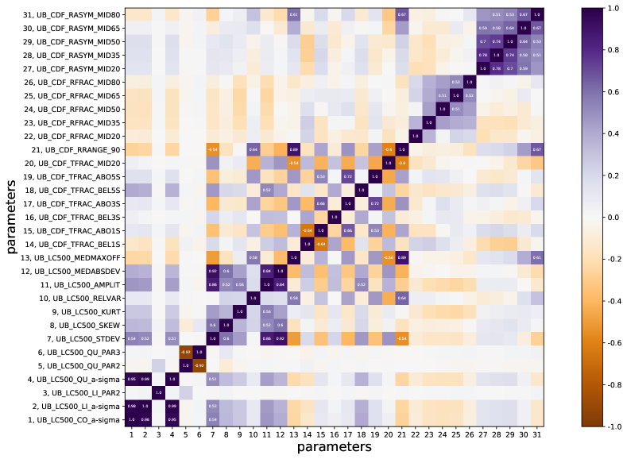
 . تقابل القيم الموجبة (الأرجوانية) ارتباطاً موجباً، في حين تقابل القيم السالبة (البنية) ارتباطاً سالباً. ولم تكتب معاملات الارتباط ذات القيمة المطلقة الأقل من 0.5 صراحة.
. تقابل القيم الموجبة (الأرجوانية) ارتباطاً موجباً، في حين تقابل القيم السالبة (البنية) ارتباطاً سالباً. ولم تكتب معاملات الارتباط ذات القيمة المطلقة الأقل من 0.5 صراحة.
كما يتبين من الشكل 13، توجد معاملات كثيرة ذات ترابط كبير فيما بينها. وكما هو متوقع، تشكل بعض المعاملات مجموعات ذات ارتباط (أو تضاد ارتباط) عال، مثل معاملات UB_CDF_TFRAC_ABO*S الثلاثة، ومعاملي UB_LC500_QU_PAR*، وكلا الانحرافين المعياريين (UB_LC500_STDEV وUB_LC500_MEDABSDEV)، ومعاملات UB_CDF_RASYM_MID* الخمسة، وغيرها.
لا يستطيع معامل ارتباط Pearson r أن يصف بدقة اعتماديات غير خطية معقدة. وتعرض بعض الأمثلة الأوضح في الشكل 14. في اللوحة العلوية مخطط مبعثر للمعامل الخطي في النموذجين الخطي والتربيعي (UB_LC500_LI_PAR2 وUB_LC500_QU_PAR2). ومعامل ارتباطهما يقارب الصفر، لكن هناك اعتماداً واضحاً على شكل X بين هذين المعاملين (يقابل المركز القيم الصفرية للمعاملات الأصلية). ولارتباطين قطريين قيمتان مطلقتان متقاربتان جداً لكن بإشارتين متعاكستين، فيلغي أحدهما الآخر منتجاً معاملاً كلياً قريباً من الصفر. وفي اللوحة السفلى مخطط مبعثر بين الالتواء والتفرطح. ومعامل ارتباطهما ، لكن هناك اعتماداً واضحاً، مشابهاً للحالة السابقة، إنما مع عدة مجموعات بدلاً من شكل «X» متناظر.
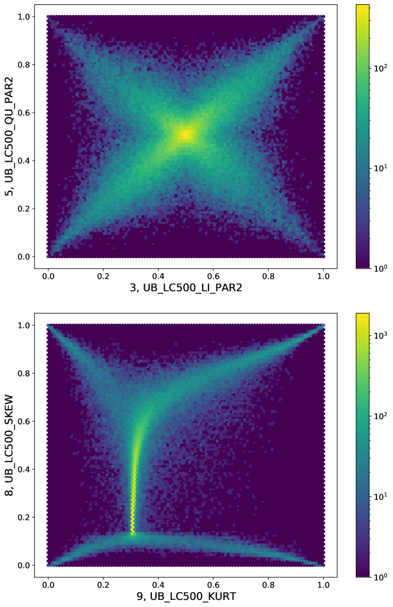
 عملية كشف، يعرض المخطط المبعثر كمخطط كثافة. وتمثل القيم التي يغطيها شريط الألوان، على مقياس لوغاريتمي، عدد عمليات الكشف في مساحة متقطعة معينة من المخطط. ويرد تفسير إضافي لارتباطات المعاملات في النص.
عملية كشف، يعرض المخطط المبعثر كمخطط كثافة. وتمثل القيم التي يغطيها شريط الألوان، على مقياس لوغاريتمي، عدد عمليات الكشف في مساحة متقطعة معينة من المخطط. ويرد تفسير إضافي لارتباطات المعاملات في النص.
من الشائع استبعاد المعاملات الزائدة في عملية التعلم الآلي لعدة أسباب، منها أن الخوارزمية تكون أكثر استقراراً وأسرع بعدد معاملات أقل، وأن تفسير أثر كل معامل في عملية التعلم يصبح أسهل.
المعاملات الزائدة هي عادة تلك ذات الارتباط العالي بمعامل معين. وفي هذه الحالة يكون الارتباط بين المعاملات معقداً جداً، وليس من السهل استبعادها بناء على معيار بسيط. ففي بعض الحالات يكون الارتباط العالي نتيجة ارتباط موجب عال جداً وارتباط سالب صغير. ولو اختير معامل واحد فقط، فستفقد المعلومات من الجزء ذي الارتباط السالب. خوارزمية SOM المستخدمة في هذا العمل سريعة نسبياً مع مجموعة البيانات هذه، ولا توجد حاجة خاصة إلى زيادة كفاءتها الزمنية باستبعاد معاملات.
يزيد التكرار بالنسبة إلى معامل معين بعد فضاء المعاملات، لكنه لا يضيف كثيراً إلى المعلومات التي يحملها ذلك المعامل. وبما أن SOM خوارزمية لخفض الأبعاد، فهي تتعامل مع ذلك طبيعياً. غير أن المسألة هي أنه إذا زاد عدد المعاملات في مجموعة معاملات مترابطة، فإن تأثير معلومات تلك المجموعة في عملية تعلم SOM يزداد. ويعود ذلك إلى أن SOM «ترى» البيانات في فضاء المعاملات اعتماداً على المسافة الإقليدية. لذلك يكون هذا الأثر متناسباً تقريباً مع الجذر التربيعي لعدد المعاملات الزائدة، ولهذا لا يكون مهماً بصورة حادة.
وبناء على كل ما سبق، قررنا تدريب SOM بجميع المعاملات المطبعة  .
.
| Parameter designation | Parameter description | Narrowness |
|---|---|---|
| UB_LC500_CO_PVALaa أعيد حساب احتمالات الذيل (قيم p) بدقة أعلى، وحُولت إلى قيم سيغما أحادية الجانب بحيث تقابل السيغما الأعلى توفيقاً أسوأ للنموذج. | Tail probability for a constant model. | 3.77 |
| UB_LC500_LI_PVALaa أعيد حساب احتمالات الذيل (قيم p) بدقة أعلى، وحُولت إلى قيم سيغما أحادية الجانب بحيث تقابل السيغما الأعلى توفيقاً أسوأ للنموذج. | Tail probability for a linear model. | 3.71 |
| UB_LC500_LI_PAR2 | Best-fit value of parameter 2 (the linear coefficient) for a linear model. | 85.5 |
| UB_LC500_QU_PVALaa أعيد حساب احتمالات الذيل (قيم p) بدقة أعلى، وحُولت إلى قيم سيغما أحادية الجانب بحيث تقابل السيغما الأعلى توفيقاً أسوأ للنموذج. | Tail probability for a quadratic model. | 3.70 |
| UB_LC500_QU_PAR2 | Best-fit value of parameter 2 (the linear coefficient) for a quadratic model. | 58.9 |
| UB_LC500_QU_PAR3 | Best-fit value of parameter 3 (the quadratic coefficient) for a quadratic model. | 118 |
| UB_LC500_STDEV | Weighted standard deviation on the distribution of the rate. | 24.7 |
| UB_LC500_SKEW | Weighted skewness on the distribution of the rate. | |
| UB_LC500_KURT | Weighted reduced kurtosis on the distribution of the rate. | |
| UB_LC500_RELVAR | Relative variance (variance/average) on the distribution of the rate. | |
| UB_LC500_AMPLIT | Amplitude of rate excursion ((max(rate)-min(rate))/2). | 17.7 |
| UB_LC500_MEDABSDEV | Median absolute deviation of the distribution of the rate. | 24.6 |
| UB_LC500_MEDMAXOFF | Maximum relative offset from the median (max(—rate- median—)/median) of the distribution of the rate. | 37.2 |
| UB_CDF_TFRAC_BEL1S | Fraction of time spent more than 1 sigma below the average rate. | 0.89 |
| UB_CDF_TFRAC_ABO1S | Fraction of time spent more than 1 sigma above the average rate. | 0.88 |
| UB_CDF_TFRAC_BEL3S | Fraction of time spent more than 3 sigma below the average rate. | 1.01 |
| UB_CDF_TFRAC_ABO3S | Fraction of time spent more than 3 sigma above the average rate. | 0.93 |
| UB_CDF_TFRAC_BEL5S | Fraction of time spent more than 5 sigma below the average rate. | 0.97 |
| UB_CDF_TFRAC_ABO5S | Fraction of time spent more than 5 sigma above the average rate. | 0.90 |
| UB_CDF_TFRAC_MID20 | Fraction of time spent within 10 percent of the median rate. | 1.62 |
| UB_CDF_RRANGE_90 | Width of the range of rates in which the source spends 90 percent of its time. | 18.6 |
| UB_CDF_RFRAC_MID20 | Fraction of UB_CDF_RRANGE_90 in which the source spends 20 percent of its time. | 1.27 |
| UB_CDF_RFRAC_MID35 | … 35 percent of its time. | 1.23 |
| UB_CDF_RFRAC_MID50 | … 50 percent of its time. | 1.04 |
| UB_CDF_RFRAC_MID65 | … 65 percent of its time. | 1.08 |
| UB_CDF_RFRAC_MID80 | … 80 percent of its time. | 1.06 |
| UB_CDF_RASYM_MID20 | Asymmetry of the rate distribution in which the source spends 20 percent of its time. | 46.0 |
| UB_CDF_RASYM_MID35 | … 35 percent of its time. | 41.6 |
| UB_CDF_RASYM_MID50 | … 50 percent of its time. | 70.4 |
| UB_CDF_RASYM_MID65 | … 65 percent of its time. | 73.7 |
| UB_CDF_RASYM_MID80 | … 80 percent of its time. | 72.5 |
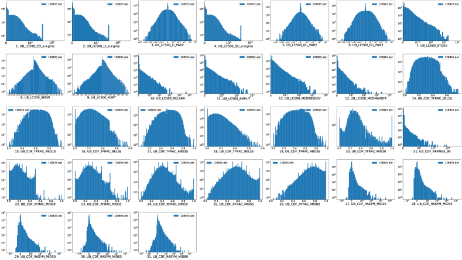
 . رُقّم كل معامل وفق ترتيبه في الجدول 1. وعدد عمليات الكشف هو نفسه لكل معامل، ويظهر في وسيلة الإيضاح في كل مدرج.
يتحول تقسيم المدرجات تكيفياً بين الخطي (حول الصفر) واللوغاريتمي (في ذيول التوزيع) في معظم الحالات لعرض توزيع كل معامل بأفضل صورة. وحذفت تسميات الأرقام من علامات التدريج القريبة من الصفر توخياً للوضوح. أما المحاور العمودية فهي بمقياس لوغاريتمي.
. رُقّم كل معامل وفق ترتيبه في الجدول 1. وعدد عمليات الكشف هو نفسه لكل معامل، ويظهر في وسيلة الإيضاح في كل مدرج.
يتحول تقسيم المدرجات تكيفياً بين الخطي (حول الصفر) واللوغاريتمي (في ذيول التوزيع) في معظم الحالات لعرض توزيع كل معامل بأفضل صورة. وحذفت تسميات الأرقام من علامات التدريج القريبة من الصفر توخياً للوضوح. أما المحاور العمودية فهي بمقياس لوغاريتمي.
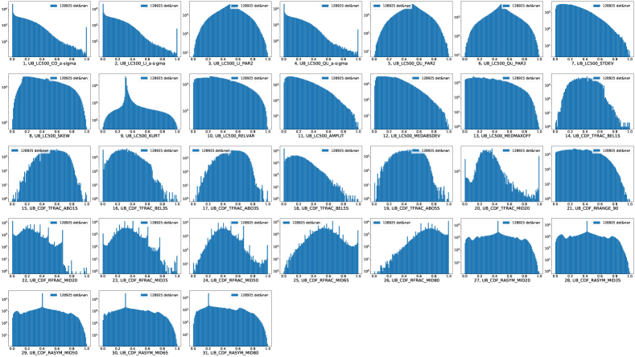
 . رُقّم كل معامل وفق ترتيبه في الجدول 1 والشكل 15. وعدد عمليات الكشف هو نفسه لكل معامل، ويظهر في وسيلة الإيضاح في كل مدرج. قسمت جميع المدرجات على مقياس خطي من الصفر إلى الواحد. أما المحاور العمودية فهي بمقياس لوغاريتمي، كما في الشكل 15.
. رُقّم كل معامل وفق ترتيبه في الجدول 1 والشكل 15. وعدد عمليات الكشف هو نفسه لكل معامل، ويظهر في وسيلة الإيضاح في كل مدرج. قسمت جميع المدرجات على مقياس خطي من الصفر إلى الواحد. أما المحاور العمودية فهي بمقياس لوغاريتمي، كما في الشكل 15.
Appendix B مصادر شبيهة بالاحتجابات من الأدبيات
| Name | Reference | Obs. id | Src. num.aa يشير رقم المصدر إلى ترميز 3XMM-DR4. | Pixel |
|---|---|---|---|---|
| RX J0047174-251811 | 1 | 0110900101 | 7 | 45,28 |
| EP Dra | 2 | 0109464501 | 1 | 45,37 |
| V* UY vol | 3 | 0560180701 | 1 | 45,32 |
| 0605560401 | 1 | 45,32 | ||
| 0651690101 | 1 | 45,32 | ||
| 0651690101 | 1 | 15,40 | ||
| 4U 1323-62 | 4 | 0109100201 | 1 | 45,40 |
| V2301 Oph | 5 | 0109465301 | 1 | 45,38 |
| 4U 2129+47 | 6 | 0502460101 | 1 | 45,31 |
| 0502460201 | 1 | 45,31 | ||
| 0502460301 | 1 | 45,31 | ||
| 0502460401 | 1 | 45,31 | ||
| 2XMMp J131223.4+173659 | 7 | 0200000101 | 1 | 45,36 |
| XTE J1710-281 | 8 | 0206990401 | 1 | 45,33 |
| NGC 4736 ULX1 | 9 | 0094360601 | 1bb هنا يُكشف المصدر نفسه كمصدرين نقطيين مختلفين في 3XMM-DR4. | 45,32 |
| 0094360601 | 2bb هنا يُكشف المصدر نفسه كمصدرين نقطيين مختلفين في 3XMM-DR4. | 45,31 | ||
| CAL 87 | 10 | 0153250101 | 1 | 45,33 |
| AX J1745.6-2901 | 11 | 0402430301 | 5 | 45,33 |
| 0402430401 | 5 | 45,32 | ||
| 0402430701 | 5 | 45,32 | ||
| 0505670101 | 4 | 45,32 | ||
| ULX CG X-1 | 12 | 0111240101 | 1 | 45,33 |
\tablebib (1) Pietsch et al. (2003); (2) Ramsay et al. (2004); (3) Bonnet-Bidaud and Haberl (2004); (4) Boirin et al. (2005); (5) Ramsay and Cropper (2007); (6) Bozzo et al. (2007); (7) Vogel et al. (2008); (8) Younes et al. (2009); (9) Lin et al. (2013); (10) Ribeiro et al. (2014); (11) Jin et al. (2018); (12) Qiu et al. (2019).